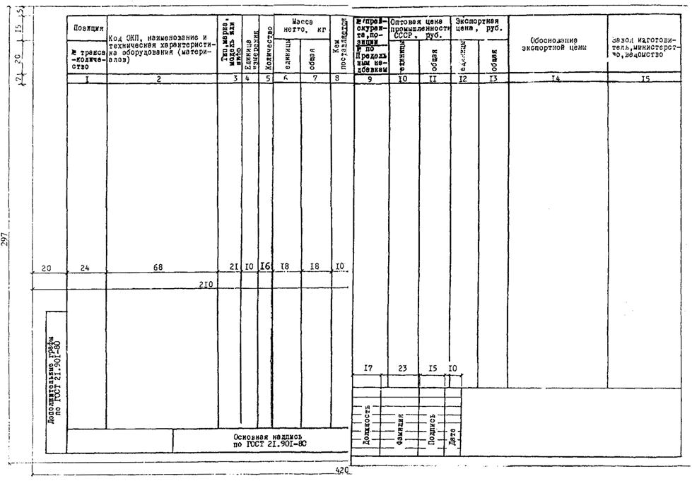
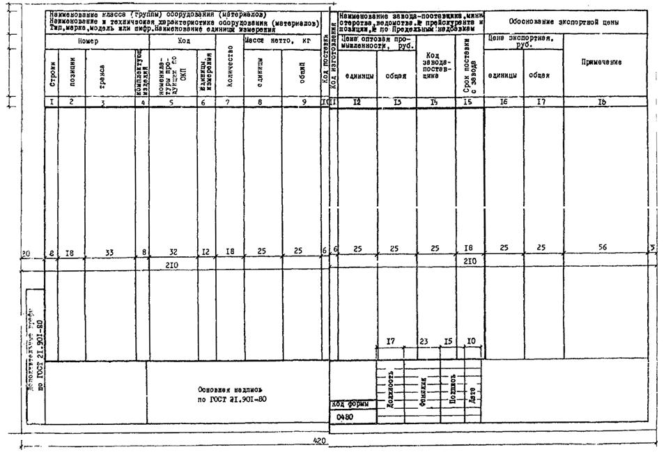
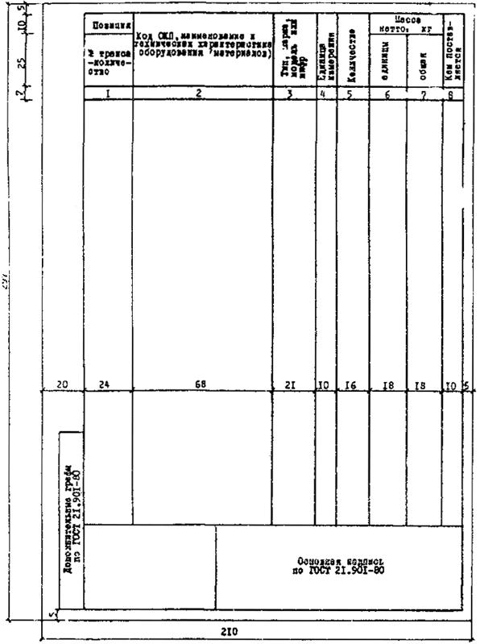
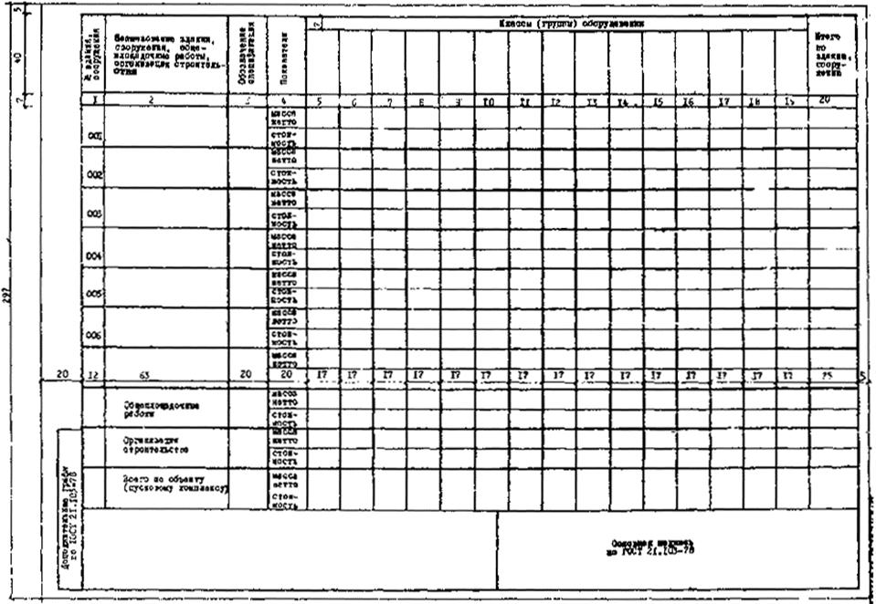
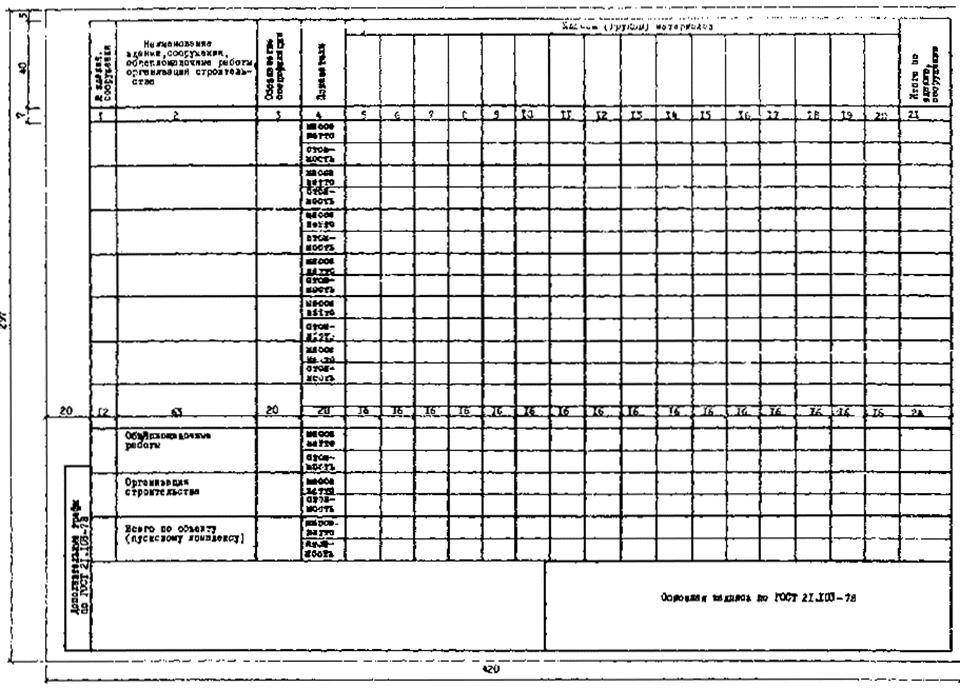

СТРОИТЕЛЬНЫЕ НОРМЫ И ПРАВИЛА
ИНСТРУКЦИЯ
по проектированию объектов для строительства за границей
СНиП 1.02.03-83
Государственный комитет СССР по делам строительства
Государственный комитет СССР по внешним экономическим связям
МОСКВА
1984
Разработана и подготовлена к утверждению Отделом типового проектирования и организации проектно-изыскательских работ (В. Г. Коршунов, А. Д. Афанасьев), Главгосэкспертизой (Е. В. Минаев, Ю. Б. Жуковский), Отделом сметных норм и ценообразования в строительстве (В. М. Барзилович) Госстроя СССР, Госгражданстроем (В. В. Милашевский), Управлением по подрядному строительству за рубежом ГКЭС (В. В. Артемьев, Н. А. Абрамов, В. Н. Голубев, В. Н. Шарыгин).
С введением в действие Инструкции утрачивают силу:
Инструкция по разработке проектов и смет для строительства за границей при техническом содействии СССР (СН 219-70);
Указания о составе, порядке разработки и одобрения технико-экономических обоснований (ТЭО) строительства предприятия, зданий и сооружений за границей при техническом содействии СССР;
Указания по экспертизе проектов, смет и технико-экономических обоснований (ТЭО) строительства предприятий, зданий и сооружений за границей при техническом содействии СССР.
1.1. Настоящая Инструкция содержит положения, регламентирующие состав, порядок разработки, согласования, экспертизы, одобрения и утверждения проектно-сметной документации на строительство новых, расширение и реконструкцию действующих предприятий, зданий и сооружений производственного и жилищно-гражданского назначения*, осуществляемые за границей организациями СССР на подрядных условиях или иностранным заказчиком при техническом содействии СССР.
___________________
* Строительство новых, расширение и реконструкция действующих предприятий, зданий и сооружений производственного и жилищно-гражданского назначения, в дальнейшем именуются "строительство предприятий, зданий и сооружений".
|
Внесена |
Утверждена |
Срок введения
в действие - |
1.2. Министерства и ведомства в необходимых случаях могут разрабатывать с учетом настоящей Инструкции ведомственные нормативные документы по проектированию, эталоны проектной документации (проектов, ТЭО, ТЭП и другой документации, перечисленной в п. 1.7), отражающие особенности проектирования для строительства за границей предприятий, зданий и сооружений отраслей промышленности, сельского хозяйства, транспорта, связи и других видов строительства, и утверждать их после одобрения ГКЭС и согласования с Госстроем СССР.
1.3. Проектирование предприятий, зданий и сооружений для строительства за границей осуществляется в соответствии с межправительственными соглашениями или контрактами с иностранными заказчиками и обеспечивается министерствами (ведомствами) - генеральными поставщиками и министерствами (ведомствами), в ведении которых находятся проектные и изыскательские организации-исполнители, по заказам всесоюзных объединений ГКЭС. Взаимоотношения указанных организаций регламентированы утвержденными Советом Министров СССР Положением о хозяйственных взаимоотношениях между всесоюзными объединениями Государственного комитета СССР по внешним экономическим связям и генеральными поставщиками и генеральными подрядчиками, участвующими в строительстве объектов за границей, и Условиями поставки товаров для экспорта.
1.4. По объектам строительства за границей проектные и изыскательские организации, как правило, выполняют:
разработку проектно-сметной документации на строительство объекта в целом, на строительство отдельных зданий и сооружений или на отдельные виды строительных и монтажных работ. При этом указанная документация может разрабатываться совместно с фирмами (организациями) иностранного заказчика или с фирмами других стран в согласованных объемах;
инженерные изыскания, а также авторский надзор за строительством (по объектам строительства на подрядных условиях);
инженерные изыскания (или участвуют в выполнении этих работ фирмами, организациями иностранного заказчика), а также авторское наблюдение за строительством (по объектам строительства при техническом содействии СССР).
1.5. При проектировании предприятий, зданий и сооружений для строительства за границей советские организации должны руководствоваться законодательством СССР, в том числе нормами, правилами, положениями, государственными стандартами и другими нормативными актами по вопросам проектирования и строительства, стандартами СЭВ (для стран, подписавших конвенцию), а также настоящей Инструкцией.
В отдельных случаях допускается применение норм и правил проектирования, действующих в зарубежной стране, в которой намечается строительство проектируемых объектов,* или других странах, а также отступление от норм и правил проектирования, действующих в СССР, если это обеспечивает нормальные (отвечающие особенностям страны строительства) условия осуществления строительства и эксплуатации объекта, снижение затрат материальных ресурсов и стоимости строительства. Возможность применения норм других стран и отступлений от норм, действующих в СССР, должна быть подтверждена министерством (ведомством), в ведении которого находится генеральный проектировщик, министерствами (ведомствами) - изготовителями оборудования (материалов) и разработчиками технологических процессов и иностранным заказчиком (по вопросам, относящимся к их компетенции) и согласована с организациями, утвердившими эти нормы.
_______________
* В дальнейшем именуется "страна строительства".
1.6. В проектах на строительство предприятий, зданий и сооружений проектные организации должны с учетом экономического и технического уровня развития, социальных, национальных и других особенностей страны строительства, а также возможностей иностранного заказчика обеспечивать:
а) реализацию достижений науки, техники и передового отечественного и зарубежного опыта с тем, чтобы построенные или реконструированные предприятия ко времени ввода их в действие были технически передовыми и обеспечивали выпуск продукции высокого качества;
б) высокую эффективность капитальных вложении за счет:
внедрения высокопроизводительного оборудования, расширения практики размещения оборудования на открытых площадках;
механизации и автоматизации производственных процессов;
повышения степени заводской готовности поставляемых стройкам оборудования, строительных конструкций и изделий;
использования наиболее экономичных транспортных схем завоза сырья, топлива, материалов и комплектующих изделий и вывоза готовой продукции;
совершенствования объемно-планировочных и конструктивных решений зданий и сооружений, блокирования производств, рационального применения монолитного и сборного железобетона, широкого использования легких несущих и ограждающих конструкций и других прогрессивных изделий и материалов и эффективного инженерного оборудования;
в) высокий уровень градостроительных и архитектурных решений;
г) рациональное использование земель, охрану окружающей природной среды, а также сейсмостойкость, взрыво - и пожарную безопасность объектов;
д) прогрессивные технико-экономические показатели проектируемых предприятий, зданий и сооружений, конкурентоспособность продукции, отсутствие излишеств, снижение стоимости строительства, трудовых и материальных затрат;
е) наиболее полное использование технологического и другого оборудования;
ж) оснащение производства, в необходимых случаях, автоматизированными системами управления;
з) кооперирование вспомогательных производств и хозяйств, инженерных сооружений и коммуникаций;
и) комплексное использование сырья и материалов, организацию безотходной, энергосберегающей технологии производства;
к) широкое использование повторно применяемых экономичных проектных решений, рабочих чертежей типовых строительных конструкций, изделий и узлов производственных зданий и сооружений для строительства за границей, а также других эффективных решений, позволявших повысить качество, сократить сроки и стоимость строительства.
По согласованию с иностранным заказчиком допускается применение менее сложных в управлении и эксплуатации оборудования и технологических процессов, а также применение традиционных для данной страны строительных решений, конструкций и материалов.
1.7. В зависимости от сложности предприятий, зданий и сооружений, условий участия организаций СССР в их строительстве и степени изученности местных условий могут разрабатываться:
технико-экономическое обоснование (ТЭО) строительства (разрабатывается по заказу иностранного заказчика);
технико-экономическое предложение (ТЭП) по строительству (разрабатывается по решению ГКЭС);
проект со сметами и рабочая документация;
рабочий проект со сметами.
Кроме того, по отдельным заказам-нарядам генеральных поставщиков проектным организациям могут быть поручены:
разработка технической части тендерной документации (см. приложение 12);
экспертиза проектной документации, разработанной иностранными фирмами (организациями);
рассмотрение и доработка спецификаций на оборудование и материалы, разработанных иностранным заказчиком в составе проектов на строительство зарубежных объектов, для которых поставка оборудования и материалов осуществляется советскими организациями;
составление спецификаций на материалы, запасные части, узлы и детали, необходимые для эксплуатации объекта;
проведение консультаций и оказание иностранному заказчику других услуг типа "инжиниринг";
составление схем развития и размещения отраслей промышленности, сельского хозяйства, транспорта и связи и др.
1.8. Проектная документация, как правило, разрабатывается:
а) для строительства объектов на подрядных условиях:
ТЭП - проект - рабочая документация;
ТЭП - рабочий проект (для технически несложных объектов).
Когда обоснование целесообразности строительства объекта выполняется советскими проектными организациями, вместо ТЭП разрабатывается ТЭО.
Кроме того, ТЭП может разрабатываться в случаях, когда всесоюзные объединения ГКЭС принимают участие в торгах на строительство объекта или на поставку и монтаж оборудования;
б) для строительства объектов при техническом содействии СССР:
ТЭО - проект - рабочая документация;
ТЭО - рабочий проект (для технически несложных объектов).
В случаях, когда иностранным заказчиком составление ТЭО советским организациям не поручается, вместо ТЭО может разрабатываться ТЭП.
Стадийность разработки проектной документации должна быть указана в утвержденном задании на проектирование.
1.9. При проектировании должно, как правило, предусматриваться применение освоенных промышленностью СССР оборудования, машин, механизмов, приборов, транспортных средств, строительных конструкций, изделий и материалов*, а также проверенных на практике технологических процессов.
_______________
* В дальнейшем именуются "оборудование и материалы".
Применение, в порядке исключения, не освоенных отечественной промышленностью оборудования и материалов, должно быть по представлению генерального проектировщика согласовано генеральным поставщиком, при участии генерального проектировщика, с министерствами-изготовителями, а применение новых технологических процессов - с министерствами, разработавшими такие процессы и осуществляющими их освоение.
Применение в проектах оборудования и материалов, поставляемых из третьих стран, может предусматриваться только в случаях особой необходимости или специальных требований иностранного заказчика, обусловленных в межправительственных соглашениях или контрактах с иностранными заказчиками. При этом применение оборудования и материалов, подлежащих приобретению в капиталистических странах на свободно конвертируемую валюту, может предусматриваться только в случаях невозможности их поставки из социалистических стран*.
_______________
* В тех случаях, когда в проектах предусматривается применение оборудования и материалов, закупаемых в третьих странах на свободно конвертируемую валюту, всесоюзные объединения ГКЭС должны, как правило, обусловливать в контрактах приобретение их непосредственно иностранным заказчиком или выделение иностранным заказчиком валютных средств на эти цели.
В составе таких проектов (в экземплярах, не передаваемых иностранному заказчику) должны быть приведены материалы, обосновывающие необходимость применения оборудования и материалов, поставляемых из третьих стран, согласованные с всесоюзным объединением ГКЭС, министерствами (ведомствами) - изготовителями аналогичных оборудования и материалов и министерством (ведомством) - генеральным поставщиком, а также копия разрешения на их приобретение, оформленного в порядке, установленном ГКЭС.
1.10. Министерства (ведомства) - генеральные поставщики с участием проектных организаций должны выдавать машиностроительным министерствам исходные требования на конструирование и изготовление машин и сложного технологического оборудования разового (единичного) заказа с длительным циклом изготовления для намечаемых к проектированию и строительству (расширению, реконструкции) предприятий до начала их проектирования, а также выдавать исходные требования на выполнение опытно-конструкторских работ по новому и модернизируемому оборудованию.
Сроки выдачи указанных исходных требований должны быть увязаны со сроками разработки проектов (рабочих проектов) и рабочей документации.
Проектные организации, по поручению министерств (ведомств)-генеральных поставщиков, по отдельному заказу подготавливают на основе материалов и данных научных исследований исходные требования (см. ГОСТ 15.001-73) на выполнение этих конструкторских работ.
Организации (предприятия) машиностроительных министерств по результатам выполненных конструкторских и опытно-конструкторских работ обязаны выдавать генеральным поставщикам исходные данные по этому оборудованию, необходимые для проектирования объектов.
В соответствии с установленным порядком министерства (ведомства), в ведении которых находятся предприятия и организации-изготовители оборудования, должны выдавать в месячный срок после получения запроса исходные данные по серийно изготавливаемому, именниковому и уникальному оборудованию, необходимые для составления ТЭО или технико-экономических расчетов по строительству объектов за границей (выполняемых при разработке ТЭП), а данные, необходимые для разработки проекта (рабочего проекта) и рабочих чертежей, - в сроки, предусмотренные комплексными графиками проектирования указанных объектов.
1.11. Генеральные проектировщики и субподрядные проектные организации должны обеспечивать проверку на патентную чистоту и патентоспособность, с оформлением в установленном Госкомизобретений порядке соответствующей патентной документации, примененных и разработанных в проектах (рабочих проектах) технологических процессов, оборудования, приборов, конструкций, изделий и материалов, а также продукции, предусматриваемой к выпуску на проектируемых предприятиях.
1.12. В случаях, когда в проектах (рабочих проектах) и ТЭО предусматривается использование советских изобретений и других научно-технических достижений, а также передача иностранному заказчику советских технических знаний и опыта ("ноу-хау"), в экземплярах указанной документации, не передаваемых иностранному заказчику, должны быть приведены предложения о целесообразности продажи лицензий на использование этих изобретений, достижений и "ноу-хау", оформленные в порядке, установленном Госкомизобретений, Госстроем СССР и ГКЭС, с расчетами их экономической эффективности.
1.13. По предприятиям горнодобывающей промышленности технико-экономические обоснования постоянных кондиций месторождений и материалы подсчета запасов полезных ископаемых (включая первичную геологическую документацию), подготовленные советскими или иностранными организациями, в необходимых случаях, должны быть рассмотрены в установленном порядке.
1.14. Проектирование предприятий, зданий и сооружений должно осуществляться с учетом Единых технических условий (ЕТУ) на проектирование предприятий, зданий и сооружений для строительства за границей, составленных для данной страны и утвержденных Госстроем СССР и ГКЭС. Вне зависимости от наличия ЕТУ по данной стране генеральным проектировщиком (или по его поручению головной проектной организацией строительного профиля) составляются технические условия на проектирование объекта, в составе которых разрабатываются основные положения на строительное проектирование. При наличии ЕТУ указанные технические условия разрабатываются на их основе.
1.15. Проектные организации должны осуществлять по поручениям министерств (ведомств) - генеральных поставщиков авторский надзор (авторское наблюдение) за строительством запроектированных ими предприятий, зданий и сооружений в порядке, установленном Положением о взаимоотношениях между советскими проектными и строительно-монтажными организациями при оказании технического содействия иностранным заказчикам в строительстве объектов за рубежом, утвержденным ГКЭС и Госстроем СССР.
1.16. Переписка проектных организаций с иностранными заказчиками по вопросам проектирования и строительства должна осуществляться по согласованию с генеральными поставщиками через соответствующие всесоюзные объединения ГКЭС.
1.17. Проектно-изыскательские работы должны выполняться, как правило, с применением современных экономико-математических методов, средств вычислительной и организационной техники, а также других прогрессивных методов (при необходимости и макетного) и технических средств составления, размножения, хранения и поиска проектных материалов, способствующих сокращению сроков и снижению затрат на выполнение работ, повышению производительности труда работников проектных и изыскательских организаций и качества проектов.
При разработке проектно-сметной документации должна выполняться двойная проверка расчетов, чертежей, спецификаций, подсчетов объемов работ, сметной документации и др.
1.18. Проектно-сметная документация, представляемая на экспертизу, одобрение и утверждение, должна разрабатываться без излишней детализации, в минимальных объеме и составе, достаточных для обоснования принимаемых проектных решений, определения объемов строительных и монтажных работ, потребности в оборудовании и материалах, трудозатратах, энергетических и других ресурсах, стоимости строительства и затрат советских организаций.
Организации, осуществляющие согласование, экспертизу, одобрение и утверждение проектно-сметной документации, не должны предъявлять требований, приводящих к неоправданному увеличению ее объема и излишней детализации.
В состав проектно-сметной документации, передаваемой иностранному заказчику, как правило, не входят расчеты строительных конструкций, технологических процессов и оборудования, технико-экономические и др., подсчеты объемов строительных и монтажных работ, сметы в смешанных ценах и сметные расчеты во внутренних (базисных) ценах СССР, материалы полевых инженерных изысканий и другая документация, разработка которой осуществляется только для представления советским организациям. В порядке исключения отдельные виды указанной документации (кроме смет и расчетов в смешанных и внутренних ценах СССР, а также документации, предназначенной только для советских организаций) могут быть переданы иностранному заказчику, по его просьбе, при наличии разрешения генерального поставщика, согласованного с всесоюзным объединением ГКЭС, а также в случаях, когда это предусмотрено в контракте.
Состав материалов проекта (рабочего проекта) и ТЭО, передаваемых иностранному заказчику, в том числе материалов, подлежащих переводу на иностранный язык, устанавливается генеральным поставщиком по представлению генерального проектировщика и должен быть согласован с всесоюзным объединением ГКЭС.
Подлинники заданий на разработку ТЭО, ТЭП, проектов (рабочих проектов) и другой документации (см. п. 1.7), исходных данных и материалов, а также документов о проведенных согласованиях, должны быть приложены к архивному экземпляру указанной документации. К остальным экземплярам этой документации должны быть приложены копия задания на ее разработку, перечень исходных данных и материалов.
Срок хранения документации и перечень организаций, в архивах которых должна храниться проектно-сметная документация для строительства за границей, определяются в установленном порядке министерством (ведомством), в ведении которого находится генеральный проектировщик.
1.19. Оформление проектной документации должно соответствовать ГОСТ 21.901-80 "СПДС. Требования к оформлению проектной документации для строительства за границей".
1.20. Генеральные проектировщики и субподрядные проектные и изыскательские организации несут ответственность за качество и своевременное выполнение проектных и изыскательских работ в порядке, установленном действующим законодательством и Условиями поставки товаров для экспорта, а также за правильность определения объемов строительных и монтажных работ, составления сметной документации и спецификаций на оборудование и материалы, перевода на иностранный язык, за комплектность проектно-сметной документации и внесение в нее в установленные сроки изменений, рекомендованных в заключениях экспертных органов.
Ответственность за качество, единство изложения и оформления материалов во всех разделах проектов (рабочих проектов), рабочей документации, ТЭО и ТЭП в соответствии с требованиями настоящей Инструкции несет генеральный проектировщик. Субподрядная проектная организация несет ответственность за качество разрабатываемых ею проектных решений и их соответствие заданию на разработку указанной проектной документации.
2.1. Проектные организации - генеральные проектировщики выполняют проектные и изыскательские работы по заказам-нарядам генеральных поставщиков, выдаваемым на основании генеральных заказов-нарядов всесоюзных объединений ГКЭС, а субподрядные организации - по заказам-нарядам генеральных проектировщиков.
Допускается выполнение инженерных изысканий специализированными изыскательскими организациями по заказам-нарядам генеральных поставщиков.
2.2. Генеральным проектировщиком по объектам производственного назначения должна быть, как правило, головная проектная организация, разрабатывающая технологическую часть проекта. Генеральным проектировщиком по объектам, не относящимся к производственным, назначается головная проектная организация соответствующего профиля.
Генеральные проектировщики несут ответственность, осуществляют обязанности и имеют права в соответствии с утвержденным Госстроем СССР Положением о проектной организации - генеральном проектировщике.
Главные инженеры и главные архитекторы проектов несут ответственность, осуществляют обязанности и имеют права в соответствии с утвержденным Госстроем СССР Положением о главном инженере, главном архитекторе проекта.
2.3. Разработка строительных решений в проектах должна поручаться, как правило, головным проектным организациям, осуществляющим строительное проектирование.
В случаях, когда в проектировании объекта участвуют несколько проектных организаций, осуществляющих строительное проектирование, генеральный проектировщик должен поручать одной из них обеспечение единства объемно-планировочных и конструктивных решений по проектируемому объекту.
Разработка соответствующих частей разделов проектов крупных предприятий и сооружений (электроснабжение, теплоизоляция, вентиляция, противокоррозионная защита, сложные основания и фундаменты и др.) должна поручаться головным проектным организациям, специализированным по этим видам работ.
2.4. Материалы инженерных изысканий должны соответствовать требованиям нормативных документов, действующих в СССР, с учетом природных условий района (участка) строительства.
При проектировании должны быть использованы материалы инженерных изысканий, представленные иностранным заказчиком. В случае их отсутствия или невозможности использования, инженерные изыскания выполняются по согласованию с иностранным заказчиком по заданию генерального проектировщика организациями иностранного заказчика с участием советских специалистов - консультантов или выполняются советскими организациями.
Материалы инженерных изысканий, выполненные организациями иностранного заказчика, должны быть по поручению генерального проектировщика проверены и приняты советской специализированной изыскательской организацией.
Для проектирования объектов строительства на подрядных условиях, а также крупных и сооружаемых в сложных инженерно-геологических условиях объектов строительства при техническом содействии СССР инженерные изыскания должны выполняться, как правило, советскими организациями.
2.5. Разработка проектно-сметной документации должна выполняться в соответствии с комплексными графиками проектирования.
В графиках устанавливаются сроки выдачи исходных данных и материалов, необходимых для проектирования, сроки выполнения проектных и изыскательских работ, сроки выдачи спецификаций на оборудование и материалы и др.
Комплексный график проектирования составляется по поручению генерального поставщика генеральным проектировщиком с участием соответствующих субподрядных проектных и изыскательских организаций, предприятий и организаций-разработчиков и изготовителей основного оборудования и утверждается министерством (ведомством), в ведении которого находится генеральный проектировщик, и министерством (ведомством) - генеральным поставщиком. Комплексный график до его утверждения должен быть согласован генеральным поставщиком с министерствами (ведомствами), в ведении которых находятся предприятия и организации-разработчики и изготовители оборудования, и всесоюзным объединением ГКЭС, а по объектам строительства на подрядных условиях - также с министерством (ведомством) - генеральным подрядчиком.
2.6. Для разработки проектной документации генеральный поставщик должен в сроки, предусмотренные комплексным графиком проектирования, выдавать проектным организациям исходные данные по заказываемому им оборудованию индивидуального изготовления, в том числе по оборудованию разового (единичного) заказа с длительным циклом изготовления, подготавливаемые в порядке, изложенном в п. 1.10, а всесоюзные объединения ГКЭС - данные по оборудованию, поставляемому иностранным заказчиком или из третьих стран.
2.7. В случаях, когда проектирование предприятия, здания, сооружения намечается осуществлять совместно с иностранными фирмами (организациями), обязательства советских проектных и изыскательских организаций, а также обязательства этих фирм (организаций) по выполнению поручаемых им работ должны быть установлены в контракте с иностранным заказчиком. На выполнение работ, поручаемых советским организациям, составляется и утверждается в соответствии с требованиями п. 2.5 комплексный график проектирования.
2.8. Для уточнения проектов заданий на разработку проектной документации и представления их на утверждение иностранному заказчику, сбора недостающих исходных данных и материалов, необходимых для проектирования, а также для защиты указанной проектной документации при ее утверждении иностранным заказчиком министерство (ведомство) - генеральный поставщик совместно с министерством (ведомством), в ведении которого находится генеральный проектировщик, комплектует и по согласованию с всесоюзным объединением ГКЭС направляет в страну строительства группу высококвалифицированных специалистов проектных, изыскательских, строительно-монтажных и других заинтересованных организаций, участвующих в проектировании и строительстве объекта.
В случаях, когда иностранный заказчик настаивает на внесении принципиальных изменений в проект задания на разработку проектной документации, эти изменения могут быть приняты только после официального их согласования с генеральным поставщиком и ГКЭС.
Сбор исходных данных и материалов для проектирования производится в организациях страны строительства. Результаты выполнения работ по сбору исходных данных и материалов должны быть (в необходимых случаях) оформлены двухсторонним протоколом с иностранным заказчиком.
2.9. Для своевременной подготовки иностранным заказчиком исходных данных и материалов для проектирования генеральный проектировщик по заданию генерального поставщика составляет перечень вопросов на русском и иностранном языках и представляет его всесоюзному объединению ГКЭС для направления иностранному заказчику, а также генеральному поставщику, не позднее, чем за 45 дней до выезда группы советских специалистов в страну строительства.
2.10. Выбор площадки для строительства предприятия, здания, сооружения осуществляется иностранным заказчиком, как правило, с участием специалистов советских проектно-изыскательских и других заинтересованных организаций, командируемых в страну строительства для сбора исходных данных (см. приложения 1 и 2). В случаях, когда площадка для строительства выбрана иностранным заказчиком без их участия, советскими специалистами должно быть составлено заключение о пригодности выбранной площадки для осуществления строительства. При этом, если по выбору площадки имеются замечания, они должны быть сообщены иностранному заказчику в порядке, установленном ГКЭС.
Выбор площадки для строительства, выполненный с участием советских специалистов, оформляется, как правило, протоколом, утверждаемым иностранным заказчиком. Протокол должен содержать обоснование выбора площадки и оценку ее пригодности для строительства.
2.11. Проектные организации в своей работе должны использовать материалы, указанные в п. 1.14, а также материалы и данные, которыми располагают соответствующие территориальные проектные организации Госстроя СССР по строительному проектированию промышленных объектов для строительства за границей*, действующие в соответствии с утвержденным Госстроем СССР Положением об этих организациях.
_________________
* В дальнейшем именуются "территориальные проектные организации"
3.1. Технико-экономическое обоснование (ТЭО) строительства разрабатывается для определения экономической целесообразности и хозяйственной необходимости проектирования и строительства предприятия, здания, сооружения.
ТЭО разрабатывается в соответствии с заданием, утвержденным иностранным заказчиком, на основе исходных данных и материалов, полученных в организациях СССР и в стране строительства, материалов ЕТУ и соответствующих проектов-аналогов.
3.2. ТЭО должно содержать:
предложения по размещению предприятия, здания, сооружения и выбору площадки для строительства; характеристику природных условий района строительства, ситуационный план, схему генерального плана, сведения о транспортных связях и оценку оптимальности варианта размещения объекта;
данные о мощности, составе основных производств и режиме работы предприятия, номенклатуре основной продукции с оценкой ее качества и конкурентоспособности, условиях сбыта продукции;
оценку оптимальности рекомендуемых проектной мощности и специализации предприятия (сооружения);
сведения о потребности в сырье, полуфабрикатах, комплектующих изделиях, электроэнергии, топливе, воде, паре, а также источниках и условиях удовлетворения этих потребностей, в том числе по импорту;
основные технологические решения, уровень механизации и автоматизации технологических процессов;
спецификации на основное оборудование, составляемые по форме № 1 приложения 6, а для передачи иностранному заказчику - перечни основного технологического оборудования с основными техническими характеристиками (с выделением в спецификациях и перечнях оборудования, которое намечается закупить в третьих странах);
основные требования на разработку сложного технологического оборудования разового (единичного) заказа с длительным циклом изготовления, ориентировочные данные по параметрам и стоимости этого оборудования;
предложения по производственному и хозяйственному кооперированию, составу и мощности вспомогательных производств, организации ремонтной службы;
сведения о производительности труда, потребности в кадрах рабочих, ИТР и служащих для эксплуатации и строительства объекта и возможности ее обеспечения;
принципиальные решения по очистке, обезвреживанию и удалению промышленных стоков, по охране воздушного бассейна и другие мероприятия по охране окружающей природной среды;
основные объемно-планировочные и конструктивные решения наиболее крупных и сложных зданий и сооружений со схематическими планами и разрезами;
данные о потребности в основных строительных материалах и конструкциях, основных строительных машинах, оборудовании, транспортных средствах, инвентарных зданиях. Ориентировочные объемы основных строительных и монтажных работ;
предложения по организации строительства, созданию (развитию) производственной базы, строительству объектов жилищного и культурно-бытового назначения для строителей. Очередность и примерные сроки осуществления строительства с учетом возможных сроков выполнения советскими организациями и иностранными заказчиками обязательств по осуществлению строительства, наличия местных строительных организаций, рабочей силы, строительных материалов и конструкций;
данные об ориентировочных размерах капитальных вложений во внутренних (базисных) ценах СССР и в валюте страны строительства с выделением стоимости поставок и услуг советских организаций.
По объектам строительства на подрядных условиях кроме того должны быть определены затраты советских организаций в смешанных ценах.
При определении ориентировочных размеров капитальных вложений во внутренних (базисных) ценах СССР и в валюте страны строительства, а также затрат советских организаций в смешанных ценах резерв средств на непредвиденные работы и затраты принимается в установленных размерах;
основные технико-экономические показатели предприятия, здания, сооружения (данные об экономической эффективности капитальных вложений и их окупаемости, в том числе удельные капиталовложения, себестоимость продукции в ценах страны строительства в сопоставлении с существующими ценами местного и мирового рынков, рентабельность производства);
сведения об особых технических и экономических условиях осуществления строительства и предложения о мероприятиях по обеспечению нормальной и эффективной работы предприятия (сооружения);
перечень научно-исследовательских, геологоразведочных и изыскательских работ с краткой характеристикой и обоснованием необходимости их выполнения в связи с намечаемым строительством;
предложения о целесообразности продажи иностранному заказчику лицензий на использование советских изобретений и других научно-технических достижений, а также передачи советских технических знаний и опыта ("ноу-хау") с расчетами их экономической эффективности или заключение об отсутствии лицензионных тем;
общую оценку экономической целесообразности и хозяйственной необходимости проектирования и строительства предприятия, здания и сооружения.
Состав ТЭО строительства по конкретным объектам уточняется с учетом отраслевых эталонов ТЭО.
Примечание. В ТЭО должны быть также приведены результаты расчетов эффективности строительства объекта для Советского Союза, выполненных в соответствии с одобренной Госпланом СССР Методикой определения экономической эффективности внешнеэкономических связей СССР, с учетом кредитных условий внешнеэкономического сотрудничества, различия в покупательной ценности видов валюты, разновременности осуществления затрат и получаемых результатов. Расчеты эффективности строительства объекта и результаты этих расчетов иностранному заказчику не передаются.
3.3. Задание на разработку ТЭО подготавливается генеральным поставщиком с привлечением генерального проектировщика на основании соглашения или контракта с иностранным заказчиком, в соответствии с составом ТЭО (см. п. 3.2) по данным об экономике и перспективах развития страны строительства, имеющимся в организациях СССР.
Подготовка задания на разработку ТЭО осуществляется в порядке, установленном в п. 5.3.
3.4. Для разработки ТЭО должны быть получены в стране строительства следующие исходные данные и материалы:
наличие в стране аналогичных предприятий, их технико-экономические показатели, технический уровень и режим работы;
наличие разведанных запасов сырья, полезных ископаемых (см. п. 1.13);
возможные источники водоснабжения и требования к очистке сточных вод;
стоимость сырья и полуфабрикатов, необходимых для производства, и условия их перевозки;
стоимость электроэнергии, топлива и других ресурсов, условия их получения;
условия перевозки продукции предприятия до мест потребления;
тарифы на перевозки и погрузочно-разгрузочные работы;
наличие трудовых ресурсов в намечаемом районе строительства;
условия оплаты труда рабочих, служащих и ИТР;
перспективы потребления в стране намечаемой к выпуску продукции, а также данные по импорту и экспорту этой продукции;
местные цены на продукцию;
возможности кооперирования основного и вспомогательного производства;
возможности страны по изготовлению и поставке оборудования (в том числе нестандартизированного), данные по его стоимости;
необходимость поставки оборудования из третьих стран;
стоимость строительных и монтажных работ, а также основных строительных материалов и конструкций;
размеры процентов на капитал в период строительства объекта и на оборотные средства;
размер таможенных обложений импортируемых и экспортируемых товаров;
сборы и налоги, определенные законодательством страны;
принятый в стране метод определения амортизационных и других отчислений, а также размера прибыли предприятий;
наличие производственной базы для строительства;
возможность обеспечения работающих на строительстве и при эксплуатации предприятия объектами жилищного и культурно-бытового назначения;
возможность привлечения местных подрядных фирм и фирм третьих стран, а также другие данные, необходимые для разработки ТЭО (см. п. 3.2).
Должны быть также получены материалы инженерных изысканий в районе (на участке) строительства (инженерно-геодезических, геологических, гидрометеорологических и других видов изысканий).
3.5. При определении экономической эффективности намечаемого строительства предприятия, здания, сооружения:
расчеты затрат, связанных с осуществлением строительства объекта, выполняются в валюте страны строительства;
затраты по импорту сырья, материалов, комплектующих изделий для эксплуатации объекта исчисляются в валюте страны-поставщика с пересчетом в валюту страны строительства и выделяются из общей суммы затрат на строительство;
себестоимость продукции определяется с учетом затрат на выплату процентов за долгосрочные и краткосрочные кредиты, а также сборов и налогов, установленных законодательством страны строительства.
При сравнении себестоимости продукции с ценой аналогичной продукции на мировом рынке необходимо пересчитывать себестоимость и цены на продукцию по официальному курсу соответствующих валют к валюте страны строительства.
3.6. Затраты на строительство внеплощадочных объектов, инженерных сетей и коммуникаций, которые должны быть включены в сумму капиталовложений на строительство предприятия, здания, сооружения, определяются, как правило, иностранным заказчиком и учитываются в ТЭО на основе предоставленных им данных.
3.7. При последующем проектировании не допускается ухудшение основных технико-экономических показателей предприятия, здания, сооружения, увеличение затрат, связанных с осуществлением строительства, по сравнению с принятыми в утвержденном ТЭО.
4.1. Технико-экономическое предложение по строительству предприятия, здания, сооружения разрабатывается для определения экономических и технических характеристик объекта, предварительных размеров затрат на строительство и экономической целесообразности участия советских организаций в его осуществлении, а также для использования всесоюзными объединениями ГКЭС при участии в торгах.
4.2. ТЭП разрабатывается на основе предоставленных иностранным заказчиком характеристик намечаемого к строительству объекта (производительность, вместимость, пропускная способность и т.п.), требований к основному оборудованию и технологическим процессам, данных по размещению объекта и других данных, необходимых для проектирования, или на основе предоставленной иностранным заказчиком тендерной документации. Для разработки ТЭП должны также использоваться исходные данные и материалы, полученные в организациях СССР, материалы ЕТУ и соответствующих проектов-аналогов.
По крупным и сложным объектам исходные данные, в необходимых случаях, дополняются и уточняются в стране строительства до утверждения задания на разработку ТЭП.
4.3. ТЭП должно содержать:
общую характеристику предприятия, здания, сооружения, площадки для строительства и сырьевой базы предприятия (сооружения);
характеристику природных условий района строительства, принципиальные решения по генеральному плану и внешнему транспорту;
данные о мощности и составе основных производств предприятия, номенклатуре основной продукции;
примерную потребность в основных ресурсах и кооперированных поставках, необходимых для эксплуатации объекта, предложения по обеспечению этой потребности;
основные технологические решения, состав основного технологического оборудования, в том числе поставляемого из третьих стран;
основные объемно-планировочные и конструктивные решения наиболее крупных зданий и сооружений со схематическими планами и разрезами;
предложения по организации и срокам строительства предприятия, здания, сооружения (включая данные о потребности в основных строительных материалах и конструкциях, оборудовании, машинах и транспортных средствах), производственной базы и объектов жилищного и культурно-бытового назначения для строителей. По объектам строительства на подрядных условиях, кроме того, должны быть определены объемы основных работ, подлежащих выполнению советскими организациями;
ориентировочный расчет затрат, связанных с осуществлением строительства, во внутренних (базисных) ценах СССР*;
ориентировочный расчет затрат советских организаций, связанных с осуществлением строительства объекта, в смешанных ценах (по объектам строительства на подрядных условиях)*;
результаты расчетов эффективности строительства объекта, выполненные в соответствии с указаниями, приведенными в примечании к п. 3.2.
Состав ТЭП по строительству конкретных объектов уточняется с учетом отраслевых эталонов.
_________________
* В указанных ориентировочных расчетах резерв средств на непредвиденные работы и затраты принимается в установленных размерах.
4.4. По технически несложным объектам и в случаях подготовки коммерческих предложений (офферт) по выполнению отдельных видов работ, поставок оборудования, материалов и др. ТЭП может разрабатываться в сокращенных объеме и составе, устанавливаемых в задании на его разработку.
4.5. Задание на разработку ТЭП составляется генеральным поставщиком с привлечением генерального проектировщика, согласовывается с министерством (ведомством) - генеральным подрядчиком в части намечаемых для применения строительных материалов и конструкций и требований к организации строительства, рассматривается министерством (ведомством), в ведении которого находится генеральный проектировщик, и утверждается министерством (ведомством) - генеральным поставщиком и ГКЭС.
5.1. Задание на проектирование предприятия, здания и сооружения составляется генеральным поставщиком с привлечением генерального проектировщика, как правило, на основе утвержденного ТЭО (ТЭП) с учетом материалов ЕТУ на проектирование предприятий, зданий и сооружений для строительства в данной стране и должно соответствовать условиям, предусмотренным межправительственным соглашением (контрактом).
5.2. Состав исходных данных и требований, приводимых в задании на проектирование объектов производственного назначения, устанавливается в соответствии с приложением 1, а по объектам жилищно-гражданского назначения - в соответствии с приложением 2.
Состав задания на проектирование может уточняться с учётом особенностей проектируемого объекта, конкретных условий строительства и требований иностранного заказчика.
Исходные данные и материалы, использованные для разработки ТЭО (ТЭП), должны быть уточнены и дополнены при подготовке задания на проектирование предприятия, здания, сооружения.
В случае, когда проектирование внеплощадочных объектов, инженерных сетей и коммуникаций выполняется иностранным заказчиком, в задании на проектирование предприятия, здания и сооружения устанавливается порядок передачи советским организациям необходимых данных по этим объектам.
5.3. Проект задания на проектирование согласовывается генеральным проектировщиком с территориальной проектной организацией, рассматривается министерством (ведомством), в ведении которого находится генеральный проектировщик, согласовывается с ГКЭС в части соответствия условиям, предусмотренным в соглашении (контракте), и одобряется министерством (ведомством) - генеральным поставщиком.
По объектам строительства на подрядных условиях проект задания должен быть согласован в части намечаемых для применения строительных материалов и конструкций и требований к организации строительства генеральным поставщиком с генеральным подрядчиком.
Одобренный проект задания на проектирование утверждается иностранным заказчиком.
Решение о разработке проекта (рабочего проекта) по утвержденному иностранным заказчиком заданию на проектирование принимается ГКЭС совместно с министерством (ведомством) - генеральным поставщиком и министерством (ведомством), в ведении которого находится генеральный проектировщик, а по наиболее важным объектам* - ГКЭС совместно с Госстроем СССР (Госгражданстроем**) с учетом заключений указанных министерств.
_________________
* Перечень наиболее важных объектов устанавливается ГКЭС и Госстроем СССР.
** По объектам жилищно-гражданского назначения.
5.4. Изменения и уточнения в задание на проектирование, утвержденное иностранным заказчиком, могут вноситься по представлению генерального поставщика только после согласования их всесоюзным объединением ГКЭС с иностранным заказчиком.
6.1. На основе проекта осуществляется подготовка контракта на строительство предприятия, здания, сооружения или на поставку оборудования и материалов и оказание иностранному заказчику других услуг; разделение с иностранным заказчиком обязательств по осуществлению строительства запроектированного объекта; размещение заказов на изготовление и поставку оборудования и материалов, разработка рабочей документации на строительство объекта, а также подготовка иностранным заказчиком (в необходимых случаях) тендерной документации.
6.2. Проект на строительство объекта производственного назначения должен состоять из следующих разделов:
1. Общая пояснительная записка.
2. Технико-экономическая часть.
3. Генеральный план и внешний транспорт.
4. Технологические решения.
5. Строительные решения.
6. Организация строительства.
7. Спецификации на оборудование и материалы.
8. Ведомости объемов работ.
9. Сметная документация.
10. Паспорт проекта.
Проект на строительство объекта жилищно-гражданского назначения должен состоять из следующих разделов:
1. Общая пояснительная записка.
2. Архитектурно-строительные решения.
3. Решения по инженерно-техническому обеспечению.
4. Организация строительства.
5. Спецификация на оборудование и материалы.
6. Ведомости объемов работ.
7. Сметная документация.
6.3. Состав и содержание разделов проекта на строительство предприятия, здания и сооружения производственного назначения установлены в приложении 4, а проекта на строительство здания, сооружения жилищно-гражданского назначения - в приложении 5.
Состав и содержание проекта могут быть уточнены при подготовке и утверждении задания на проектирование в зависимости от назначения объекта, особенностей отрасли промышленности и вида строительства, с учетом соответствующего эталона проекта.
6.4. Когда для осуществления принятых в проекте технических решений требуется выполнение научно-исследовательских, экспериментальных или опытных работ, в материалах проекта приводится их перечень с краткой характеристикой и обоснованием необходимости выполнения этих исследований и работ.
7.1. Рабочая документация на строительство предприятия, здания и сооружения разрабатывается в соответствии с утвержденным проектом.
Рабочая документация должна выполняться с необходимой для осуществления строительства объекта детализацией и уточнением принятых в проекте технологических, архитектурно-строительных и других решений, а также уточнением состава и стоимости оборудования и материалов, принятых в проекте по укрупненной номенклатуре, для размещения заказов на их изготовление и поставку.
Проектные организации в процессе разработки рабочей документации должны осуществлять контроль за тем, чтобы уточняемые в рабочих чертежах решения не приводили к увеличению стоимости строительства по утвержденному сводному сметному расчету во внутренних (базисных) ценах СССР.
7.2. В состав рабочей документации на строительство предприятий, зданий и сооружений должны входить:
рабочие чертежи, разработанные в соответствии с требованиями государственных стандартов СПДС;
спецификации на оборудование и материалы, составленные в соответствии с требованиями настоящей Инструкции, опросные листы и габаритные чертежи;
ведомости отклонений объемов строительных, монтажных и специальных работ по рабочим чертежам от объемов этих работ, определенных в проекте (см. форму № 6 приложения 10);
стандарты и нормали СССР, на которые имеются ссылки в проекте и рабочей документации (или необходимые извлечения из них), оформленные в соответствии с Порядком организации работ по переводу государственных стандартов на иностранные языки, утвержденным Госстандартом СССР, Госстроем СССР и ГКЭС;
чертежи примененных в проектной документации типовых конструкций, изделий и узлов производственных зданий и сооружений для строительства зарубежных объектов.
7.3. Рабочие чертежи должны разрабатываться в следующем составе:
чертежи генерального плана;
чертежи, предназначенные для производства строительных и монтажных работ;
чертежи (планы и разрезы) установки технологического, транспортного, энергетического и другого оборудования и связанных с ним коммуникаций, конструкций, устройств и схемы технологических трубопроводов с чертежами тепловой изоляции;
чертежи сооружений и устройств, связанных с охраной окружающей природной среды, труда и техникой безопасности, а также с выполнением мероприятий по восстановлению (рекультивации) земельных участков, нарушенных при строительстве;
чертежи (планы, разрезы, профили трасс, схемы) сетей и устройств водо-, тепло-, газо-, электроснабжения, электрооборудования, автоматизации технологических процессов и управления предприятием, связи и сигнализации, радиофикации и других сетей и устройств;
чертежи элементов строительных конструкций (при отсутствии типовых), в том числе чертежи металлических конструкций марки КМ;
деталировочные чертежи опорных конструкций и креплений трубопроводов, электропроводок, технологического оборудования и связанных с ними обслуживающих площадок;
чертежи сложных нетиповых временных зданий, сооружений и коммуникаций.
Разработка рабочих чертежей других нетиповых временных зданий и сооружений производится строительно-монтажными организациями в составе проектов производства работ;
эскизные чертежи общих видов нетиповых технологических, энергетических и других устройств и конструкций, а также нестандартизированного оборудования в объеме, необходимом для разработки конструкторской документации по ГОСТ 2.103.68.
Деталировочные чертежи металлоконструкций (КМД) и технологических трубопроводов должны разрабатываться заводами-изготовителями, а деталировочные чертежи воздуховодов - монтажными организациями.
Для зданий и сооружений с особо сложными конструкциями и условиями производства работ, строительство которых осуществляется с применением специальных вспомогательных сооружений, приспособлений, устройств и установок, регламентированных нормативными актами по разработке проектов организации строительства и проектов производства работ, проектные организации, осуществляющие проектирование объекта, должны разрабатывать рабочие чертежи этих сооружений, приспособлений, устройств и установок.
7.4. Для разработки рабочей документации генеральный поставщик должен выдать проектной организации исходные данные по оборудованию, в том числе - монтажные чертежи в соответствии с требованиями ГОСТ 2.102-68, включая задания на разработку чертежей фундаментов под основное и вспомогательное оборудование и подземных коммуникаций и сооружений, а также данные о потребности в энергоресурсах, чертежи обслуживающих площадок и ограждений в пределах этого оборудования.
7.5. В отдельных случаях, по решению ГКЭС, согласованному с министерствами (ведомствами) - генеральным поставщиком и генеральным подрядчиком, рабочая документация на объемы работ первого года строительства может разрабатываться до утверждения проекта.
8.1. Рабочий проект разрабатывается по технически несложным предприятиям, зданиям и сооружениям для решения вопросов, указанных в п. 6.1, и выполнения строительно-монтажных работ при осуществлении строительства.
8.2. Рабочий проект на строительство объекта производственного назначения должен состоять из следующих разделов:
1. Общая пояснительная записка и технико-экономическая часть.
2. Генеральный план и внешний транспорт.
3. Технологические решения.
4. Строительные решения.
5. Организация строительства.
6. Спецификация на оборудование и материалы.
7. Ведомости объемов работ.
8. Сметная документация.
9. Паспорт рабочего проекта.
10. Рабочая документация.
8.3. Рабочий проект на строительство объекта жилищно-гражданского назначения должен состоять из следующих разделов:
1. Общая пояснительная записка.
2. Архитектурно-строительные решения.
3. Решения по инженерно-техническому обеспечению.
4. Организация строительства.
5. Спецификации на оборудование и материалы.
6. Ведомости объемов работ.
7. Сметная документация.
8. Рабочая документация.
8.4. Материалы разделов 1-9 рабочего проекта на строительство объекта производственного назначения (см. п. 8.2) и разделов 1-7 рабочего проекта на строительство объекта жилищно-гражданского назначения (см. п. 8.3) разрабатываются применительно к требованиям по составу и содержанию аналогичных разделов проекта, приведенным в приложениях 4 и 5 (соответственно). Указанные материалы представляются на рассмотрение, одобрение и утверждение.
8.5. Состав и содержание рабочего проекта уточняются в задании на проектирование в зависимости от специфики вида строительства и назначения объекта. При этом допускается сокращение объема и состава материалов и данных, предусмотренных в приложениях 4 и 5.
8.6. В состав рабочей документации рабочего проекта должны входить:
рабочие чертежи, разработанные в соответствии с требованиями, указанными в п. 7.3;
стандарты и нормали, на которые имеются ссылки в рабочем проекте (или необходимые извлечения из них), оформленные в соответствии с Порядком организации работ по переводу государственных стандартов на иностранные языки, утвержденным Госстандартом СССР, Госстроем СССР и ГКЭС;
чертежи примененных в рабочем проекте типовых конструкций, изделий и узлов производственных зданий и сооружений для строительства зарубежных объектов.
8.7. В целях сокращения объема документации чертежи в разделах 2-4 рабочего проекта на строительство объекта производственного назначения и в разделах 2-3 рабочего проекта на строительство объекта жилищно-гражданского назначения, необходимые для обоснования проектных решений (генеральный план и внешний транспорт, планы и разрезы зданий и сооружений и др.), должны разрабатываться в соответствии с требованиями к рабочим чертежам.
9.1. Раздел проекта (рабочего проекта) "Организация строительства" разрабатывается в соответствии с нормативными актами о порядке составления и согласования проектов организации строительства и проектов производства работ, утвержденными Госстроем СССР и дополнительными требованиями, установленными настоящей Инструкцией.
9.2. В проектах (рабочих проектах) на строительство объектов при техническом содействии СССР раздел "Организация строительства" может не разрабатываться или разрабатываться в сокращенном объеме, что должно быть обусловлено в задании на проектирование. По объектам строительства на подрядных условиях указанный раздел разрабатывается во всех случаях.
9.3. При разработке раздела "Организация строительства" должны быть учтены следующие дополнительные требования:
должен составляться укрупненный комплексный график строительства, в котором определяются сроки выполнения проектно-изыскательских, строительных, монтажных и пусконаладочных работ и сроки поставки оборудования и материалов;
в графике потребности в строительных конструкциях, изделиях, материалах и оборудовании должны быть приведены указания по обеспечению местными строительными материалами, конструкциями и изделиями и способам их доставки на строительную площадку;
в пояснительной записке должна быть приведена потребность в административно-управленческом и линейно-производственном персонале (АУП и ЛПП), а также даны рекомендации по обеспечению потребности в рабочих кадрах, АУП и ЛПП за счет национальных кадров (с частичным обучением их на месте или в СССР) и за счет специалистов, командируемых из СССР или третьих стран.
Кроме того, должны быть разработаны:
схемы транспортировки тяжеловесных и негабаритных оборудования и конструкций от предприятий-изготовителей (комплектовочных баз) в СССР и за рубежом до площадки строительства.
В схемах должны быть указаны виды транспорта, маршруты и условия транспортировки, погрузки и выгрузки грузов, решения по устройству (приспособлению) площадок для их складирования в пунктах перевалки и на площадке строительства, по укреплению (при необходимости) конструкций причалов и искусственных сооружений на путях транспортировки грузов, а также предложения по использованию имеющихся, аренде или приобретению (при экономической целесообразности) подъемно-транспортного оборудования и транспортных средств для обработки грузов в пунктах перевалки и на площадке строительства;
предложения по использованию имеющихся в районе строительства зданий и сооружений, строительству временных зданий и сооружений, необходимых для осуществления строительства объекта, и их инженерному обеспечению;
предложения по привлечению иностранных фирм для участия в строительстве;
спецификации на оборудование и материалы по разделу "Организация строительства", составленные в соответствии с указаниями, изложенными в разделе 10.
Примечания. 1. Ведомость объемов основных строительных, монтажных и специальных работ составляется по данным сводной ведомости объемов работ (см. приложение 10, форма № 5).
2. Потребность в основных строительных машинах, оборудовании, транспортных средствах и рабочих кадрах определяется на основе сводной ведомости строительных и монтажных работ, элементных сметных норм на строительные работы и расценок на монтаж оборудования, с поправками на производительность труда местных рабочих. Потребность в транспортных средствах определяется, кроме того, на основе схем транспортировки тяжеловесных и негабаритных оборудования и конструкций, а для остальных грузов - по исходным данным для разработки раздела "Организация строительства" и составления сметной документации (см. приложения 1, 2 и 3).
3. Потребность в строительных конструкциях, изделиях, деталях, полуфабрикатах и материалах определяется по спецификациям, составляемым в соответствии с требованиями п. 10.6.
9.4. По объектам строительства при техническом содействии СССР в тех случаях, когда заданием на проектирование разработка раздела проекта (рабочего проекта) "Организация строительства" не предусмотрена, но обязательствами советских организаций обусловлена поставка строительных машин, оборудования и транспортных средств или командирование советских специалистов-консультантов по строительству объекта и оказание других услуг, по решению всесоюзного объединения ГКЭС и генерального поставщика могут разрабатываться предложения по организации строительства, которые должны содержать следующие материалы:
график строительства с рекомендуемыми сроками выполнения основных строительных, монтажных и специальных работ;
спецификации на строительные машины, оборудование и транспортные средства, поставляемые из СССР, и перечни оборудования, машин и транспортных средств, поставляемых иностранным заказчиком;
рекомендации о командировании советских специалистов для оказания технического содействия в строительстве объекта (в том числе для проведения авторского наблюдения за осуществлением строительства) с указанием их количества и специальностей;
ведомость объемов основных строительных, монтажных и специальных работ;
краткая пояснительная записка с рекомендациями по организации строительства и срокам выполнения поставок оборудования, материалов и др.
9.5. В разделе проекта (рабочего проекта) "Организация строительства", как правило, должно предусматриваться применение строительных машин, оборудования и транспортных средств, изготавливаемых в СССР. Применение (в исключительных случаях) строительных машин, оборудования, транспортных средств, оснастки и др., подлежащих приобретению в стране строительства или третьих странах, должно быть оформлено разрешением ГКЭС в установленном порядке.
9.6. При разработке раздела проекта (рабочего проекта) "Организация строительства" должно предусматриваться максимальное использование для нужд строительства (при соответствующем обосновании и по согласованию с организациями страны строительства) местной производственной базы, существующих складских и жилых зданий и сооружений, зданий и сооружений строящегося объекта, действующих пунктов приема грузов и путей их перевозки с тем, чтобы обеспечить наименьшие затраты советских организаций на осуществление строительства.
В случае необходимости строительства временных зданий (сооружений) производственной базы и жилого поселка для строителей должно предусматриваться, как правило, применение инвентарных зданий, изготавливаемых промышленностью СССР.
9.7. По объектам строительства на подрядных условиях раздел проекта (рабочего проекта) "Организация строительства" после подписания контракта на строительство, в необходимых случаях, может уточняться разработавшей его проектной организацией по отдельному поручению генерального поставщика.
9.8. Раздел проекта (рабочего проекта) "Организация строительства" является основой для разработки проекта производства работ (ППР), который должен выполняться в соответствии с требованиями нормативных документов, указанных в п. 9.1.
ППР разрабатываются, как правило, силами генерального подрядчика.
Для строительства особо сложных зданий и сооружений, а также объектов, возводимых в сложных геологических и тяжелых климатических условиях, ППР могут разрабатываться проектными и другими организациями по заказам-нарядам генерального подрядчика, согласованным с генеральным проектировщиком и всесоюзным объединением ГКЭС. Стоимость разработки ППР в этих случаях должна предусматриваться в сметах на проектно-изыскательские работы.
10.1. Спецификации на оборудование и материалы в проекте (рабочем проекте) должны составляться с особой тщательностью, имея в виду, что на их основе производится разделение поставок с иностранным заказчиком, определение экспортной стоимости, заключение контрактов на поставку и оформление заказов-нарядов на изготовление оборудования и материалов.
10.2. Спецификации на оборудование и материалы составляются генеральным проектировщиком и субподрядными проектными организациями по разрабатываемым ими разделам и частям проекта (рабочего проекта).
10.3. Сводные спецификации на оборудование и материалы, сводные ведомости массы и стоимости оборудования и материалов составляются генеральным проектировщиком по объекту в целом. По решению генерального поставщика, согласованному с всесоюзным объединением ГКЭС, по крупным объектам генеральным проектировщиком составляются кроме того сводные спецификации на оборудование и материалы по пусковым комплексам, зданиям и сооружениям.
10.4. Спецификации на оборудование и материалы составляются по формам № 1 или № 1а и № 2, а сводные ведомости массы и стоимости оборудования и материалов - по формам № 3 и № 4 (см. приложения 6, 7 и 8).
Необходимость составления спецификаций по форме № 1а, обрабатываемых с использованием ЭВМ, устанавливается генеральным поставщиком по согласованию с генеральным проектировщиком и всесоюзным объединением ГКЭС.
Спецификации по форме № 2 составляются на русском и иностранном языках и передаются иностранному заказчику.
При составлении спецификаций наименование оборудования и материалов должно указываться в последовательности, приведенной в приложении 9.
10.5. В спецификациях, разрабатываемых в составе проекта, потребность в КИП и автоматике, системах управления электроприводами, распределительных устройствах, кабельной продукции, трубопроводах, запорно-регулирующей арматуре, разрешается определять по укрупненным показателям. Позиции указанных оборудования и материалов в графе 1 формы № 1 (№ 1а) должны быть отмечены знаком "*".
10.6. Спецификации на материалы, конструкции и изделия в проекте (рабочем проекте) составляются на основе ведомостей объемов строительных монтажных работ, элементных сметных норм на строительные работы и расценок на монтаж оборудования.
В сводных спецификациях должны предусматриваться затраты на прочие материалы в размере 2 % от общей стоимости материалов*.
_______________
* В отдельных случаях, когда по объектам строительства на подрядных условиях затраты на прочие материалы превышают 2 % (что должно быть подтверждено соответствующими расчетами), размер этих затрат может быть увеличен по решению генерального поставщика, согласованному с генеральным подрядчиком и всесоюзным объединением ГКЭС.
10.7. Спецификации на оборудование и материалы, поставляемые иностранным заказчиком или закупаемые советскими организациями в третьих странах, а по объектам строительства на подрядных условиях, кроме того, - на закупаемые в стране строительства, а также спецификации на оборудование и материалы временного ввоза, предусмотренные в разделе "Организация строительства" (оборудование, машины, транспортные средства, инвентарные здания и другое имущество), в разделе "Спецификация" проекта (рабочего проекта) и в рабочей документации составляются отдельно на каждый из указанных видов оборудования и материалов.
10.8. Сводные спецификации на оборудование и материалы и сводные ведомости массы и стоимости оборудования и материалов направляются генеральным проектировщиком в трех экземплярах соответствующему всесоюзному объединению ГКЭС не позднее, чем за два месяца до срока передачи проекта (рабочего проекта) на экспертизу.
Всесоюзное объединение ГКЭС в месячный срок сообщает генеральному проектировщику данные о стоимости в экспортных ценах оборудования и материалов, поставляемых советскими организациями.
10.9. При разработке рабочей документации, по утвержденному проекту, составляются уточненные спецификации на материалы, а также спецификации на дополнительное оборудование, не предусмотренное проектом, и на оборудование, подлежащее исключению.
При этом уточнение спецификаций допускается только по нестандартизированному оборудованию и сложному технологическому оборудованию разового (единичного) заказа с длительным циклом изготовления, оборудованию и приборам, для заказа которых требуются дополнительные данные (КИП и автоматика, системы управления электроприводами, распределительные устройства и др.), а также по кабельной продукции, технологическим трубопроводам и другим материалам, в пределах 5 % от определенных в проекте общей стоимости оборудования и общей стоимости материалов в оптовых ценах промышленности.
Спецификации на оборудование и материалы, составленные в рабочем проекте, уточнению не подлежат.
10.10. Определение заводов-изготовителей оборудования индивидуального изготовления, машин и сложного технологического оборудования разового (единичного) заказа с длительным циклом изготовления и нестандартизированного оборудования, согласование с ними технических вопросов, связанных с исполнением заказов на изготовление и поставку, осуществляется генеральным поставщиком с участием генерального проектировщика и соответствующих субподрядных проектных организаций. Документация, необходимая для заказа этого оборудования, должна быть своевременно согласована указанными организациями с заводами-изготовителями.
Исходные данные по серийному оборудованию проектные организации принимают по промышленным каталогам и другим информационным материалам.
На соответствующие виды оборудования и изделия проектными организациями заполняются опросные листы и габаритные чертежи.
10.11. Спецификации на приборы, запасные части, приспособления, оснастку, инструмент и материалы, требующиеся для выполнения пусконаладочных работ и обеспечения гарантийного периода эксплуатации, а также необходимая для этого техническая документация, составляются организациями, выполнявшими пусконаладочные работы или оказывающими иностранному заказчику содействие в эксплуатации предприятия (объекта), и в состав проекта (рабочего проекта) не входят.
11.1. Состав и назначение сметной документации, разрабатываемой в проекте (рабочем проекте), определяются в зависимости от условий участия советских организаций в осуществлении намечаемого строительства предприятия, здания, сооружения.
Сметная стоимость работ, поставок и услуг, определенная в сметной документации, разработанной в составе проекта, при разработке рабочей документации, как правило, не уточняется.
11.2. По объектам строительства на подрядных условиях, составляются:
а) сводная смета в смешанных ценах.
Сводная смета в смешанных ценах определяет размер средств на возмещение связанных со строительством объекта затрат советских организаций, в пределах СССР - в советских рублях и за границей - в инвалютных рублях. Эта сводная смета является основным документом, устанавливающим лимит финансирования строительства или размер кредита, выдаваемого Стройбанком СССР, а также размер средств на возмещение всесоюзным объединением ГКЭС генеральному поставщику и генеральному подрядчику затрат, связанных со строительством объекта. Сопоставление стоимости работ, поставок и услуг по сводной смете в смешанных ценах с ценой контракта позволяет ГКЭС предварительно судить об эффективности участия советских организаций в строительстве объекта на подрядных условиях. В сводной смете в смешанных ценах отдельной строкой предусматривается резерв средств на непредвиденные работы и затраты в размере 10 % от общих затрат в советских рублях и в инвалютных рублях (кроме случаев, когда в субконтракте на выполнение субподрядных работ учитывается резерв средств на непредвиденные работы и затрат ты);
б) сводная смета в валюте страны строительства (необходимость ее составления устанавливается всесоюзным объединением ГКЭС).
Указанная сводная смета используется для определения цены контракта, а также для разработки технико-экономической части проекта (рабочего проекта);
в) сводный сметный расчет во внутренних (базисных) ценах СССР.
Сводный сметный расчет во внутренних (базисных) ценах СССР предназначается для использования при составлении смет в смешанных ценах (в том числе - для определения количества материальных и трудовых ресурсов, численности линейно-производственного и административно-хозяйственного персонала) и смет в валюте страны строительства (или расчетов в валюте, когда смета в валюте страны строительства не составляется), для использования при планировании, учете, отчетности и расчетах за выполненные работы, а также для определения технико-экономических показателей проектируемого объекта;
г) смета в смешанных ценах на затраты, связанные с предконтрактной проработкой вопросов проектирования и строительства объекта, сбором исходных данных для проектирования, проведением изыскательских и исследовательских работ, разработкой проекта, рабочего проекта (включая разработку чертежей нестандартизированного оборудования) и защитой его при утверждении иностранным заказчиком.
Указанная смета определяет сумму финансирования или кредитования Стройбанком СССР, а также возмещения всесоюзным объединением ГКЭС генеральному поставщику расходов, связанных с выполнением перечисленных работ, и действует до утверждения сводной сметы в смешанных ценах;
д) сводная ведомость затрат в смешанных ценах по отдельным зданиям и сооружениям объекта (пускового комплекса) и видам работ.
Сводная ведомость указанных затрат является основой при планировании и учете выполнения строительных и монтажных работ в сметанных ценах и отчетности по ним;
е) сметно-финансовый расчет на первоочередные затраты (разрабатывается, в необходимых случаях, по решению всесоюзного объединения ГКЭС и действует до утверждения сводной сметы в смешанных ценах);
ж) предложение по распределению затрат, связанных со строительством объекта, между генеральным поставщиком, генеральным подрядчиком и всесоюзным объединением ГКЭС (является приложением к сводной смете в смешанных ценах);
11.3. По объектам строительства при техническом содействии СССР составляются:
а) сводная смета (или ориентировочный расчет - в случаях, когда сводная смета не составляется) стоимости строительства объекта в валюте страны строительства. Составляется при наличии исходных данных, выданных иностранным заказчиком. Необходимость составления указанной сводной сметы устанавливается в задании на проектирование.
Сводная смета или ориентировочный расчет стоимости в валюте страны строительства служат основой для разработки технико-экономической части проекта (рабочего проекта);
б) ведомость затрат по поставкам и услугам советских организаций (уточняется при заключении контракта);
в) сводный сметный расчет во внутренних (базисных) ценах СССР.
Указанный сводный сметный расчет предназначается для использования при составлении смет или расчетов в валюте страны строительства, а также для определения материальных и трудовых ресурсов, составления смет на различные виды услуг и определения технико-экономических показателей проекта (рабочего проекта) во внутренних (базисных) ценах СССР;
г) сводная смета в смешанных ценах на проектные и изыскательские работы.
Указанная сводная смета определяет сумму финансирования или кредитования Стройбанком СССР, а также возмещения всесоюзным объединением ГКЭС генеральному поставщику расходов, связанных со сбором исходных данных для проектирования, проведением изыскательских и исследовательских работ, с разработкой проекта, рабочего проекта (включая разработку чертежей нестандартизированного оборудования) и защитой их при утверждении иностранным заказчиком, разработкой рабочей документации и осуществлением авторского наблюдения за строительством;
д) смета в смешанных ценах на затраты, связанные со сбором исходных данных для проектирования, проведением изыскательских и исследовательских работ, разработкой проекта, рабочего проекта (включая разработку чертежей нестандартизированного оборудования) и защитой его при утверждении иностранным заказчиком.
Указанная смета определяет сумму финансирования или кредитования Стройбанком СССР, а также возмещения всесоюзным объединением ГКЭС генеральному поставщику расходов, связанных с выполнением перечисленных работ, и действует до утверждения сводной сметы в смешанных ценах на проектные и изыскательские работы;
е) смета в смешанных ценах на содержание советских специалистов, командируемых по контракту для оказания технического содействия.
Указанная смета определяет сумму финансирования или кредитования Стройбанком СССР генерального поставщика или генерального подрядчика, а также возмещения всесоюзным объединением ГКЭС расходов, связанных с командированием ими советских специалистов для оказания технического содействия;
ж) сметы на затраты генерального поставщика или генерального подрядчика, связанные с поставкой иностранному заказчику оборудования и материалов.
Сметы на затраты генерального поставщика или генерального подрядчика определяют предельные суммы затрат, связанных с поставкой оборудования и материалов, возмещаемых этим организациям всесоюзным объединением ГКЭС, а также служат для установления предельных затрат в генеральных заказах-нарядах, выдаваемых генеральному поставщику и генеральному подрядчику.
11.4. Исходные данные для составления смет в смешанных ценах (см. приложение 3), полученные в советских организациях и стране строительства генеральным проектировщиком с участием представителей генерального подрядчика и всесоюзного объединения ГКЭС, утверждаются ГКЭС (или в порядке им установленном) по согласованию с министерствами (ведомствами) - генеральным поставщиком и генеральным подрядчиком, а по наиболее важным объектам - также с Госстроем СССР (Госгражданстроем).
Согласование исходных данных для составления сметной документации (или представление обоснованных замечаний по ним) должно производиться указанными организациями в срок до 20 дней, а по наиболее крупным предприятиям и сооружениям - до 25 дней.
11.5. При составлении сметной документации перевод валюты страны строительства, валюты третьих стран и свободно-конвертируемой валюты в инвалютные рубли и обратно производится по "Бюллетеню курсов иностранных валют" Госбанка СССР на дату, установленную всесоюзным объединением ГКЭС.
11.6. К сводной смете в смешанных ценах прикладывается пояснительная записка, в которой должны быть приведены сведения, обосновывающие порядок определения средств по статьям сводной сметы, а также обязательства советских организаций в соответствии с заключенным контрактом.
11.7. К сводной смете в валюте страны строительства прикладывается пояснительная записка, в которой должны быть приведены подробные сведения, обосновывающие принятый порядок определения средств по статьям сводной сметы, а также отмечено, что сумма поставок и услуг советских организаций является ориентировочной и подлежит уточнению после заключения контракта с иностранным заказчиком.
11.8. Переводится на иностранный язык и передается иностранному заказчику следующая сметная документация:
сводная смета в валюте страны строительства с приложением смет и расчетов;
ведомость затрат по поставкам и услугам советских организаций.
11.9. Количество экземпляров различных видов сметной документации, представляемой организациям генерального подрядчика, генерального поставщика и всесоюзному объединению ГКЭС, устанавливается в заказе-наряде генерального поставщика.
11.10. Сметная документация разрабатывается в порядке, установленном Госстроем СССР и ГКЭС.
Формы сводной сметы в смешанных ценах и сводной сметы в валюте страны строительства приведены в приложении 11 к настоящей Инструкции.
11.11. Состав, порядок разработки и утверждения сметной документации на строительство, осуществляемое в Монгольской Народной Республике организациями СССР, установлены специальным указанием Госстроя СССР и ГКЭС.
______________
* Порядок согласования, одобрения и утверждения заданий на разработку ТЭО, ТЭП и заданий на проектирование приведен соответственно в разделах 3, 4 и 5 настоящей Инструкции.
12.1. Проектно-сметная документация на строительство предприятия, здания, сооружения должна быть разработана в соответствии с нормативными актами, указанными в п. 1.5, что должно быть удостоверено соответствующей записью главного инженера (главного архитектора) проекта на титульном листе общей пояснительной записки в экземплярах проекта (рабочего проекта), не передаваемых иностранному заказчику.
Отступления от норм, правил и других нормативных документов согласовываются в порядке, указанном в п. 1.5.
Рабочие чертежи, разработанные в составе рабочей документации в соответствии с утвержденным проектом, согласованию не подлежат.
12.2. Основные положения на строительное проектирование, а также основные положения по организации строительства и особые требования по монтажу тяжеловесных, негабаритных оборудования и конструкций, должны быть согласованы генеральным проектировщиком, с генеральным подрядчиком.
12.3. Строительные решения, принятые в проекте, рабочем проекте, ТЭО и ТЭП, должны быть в процессе их разработки согласованы генеральным проектировщиком (или по его поручению - соответствующей субподрядной проектной организацией) с территориальной проектной организацией в порядке и сроки, установленные в Положении об этой организации.
12.4. Проект (рабочий проект) по объектам строительства на подрядных условиях, а также ТЭО и ТЭП, должны быть согласованы в части конструктивных решений зданий (сооружений) и решений по организации строительства министерством (ведомством) - генеральным поставщиком, при участии генерального проектировщика, с министерством (ведомством) - генеральным подрядчикам.
По объектам строительства при техническом содействии СССР раздел проекта (рабочего проекта) "Организация строительства" (предложения по организации строительства) должен быть согласован указанными организациями с министерством (ведомством) - генеральным подрядчиком.
Схемы транспортировки грузов (см. п. 9.3) должны быть согласованы министерствами (ведомствами) - генеральным поставщиком и генеральным подрядчиком при участии генерального проектировщика с соответствующими министерствами, осуществляющими транспортные перевозки.
12.5. Проекты (рабочие проекты) и сметная документация, ТЭО и ТЭП подлежат экспертизе министерствами (ведомствами), в ведении которых находятся генеральные проектировщики. Проекты (рабочие проекты), сметная документация и ТЭО по наиболее важным объектам строительства на подрядных условиях и при техническом содействии СССР подлежат, кроме того, экспертизе Госстроя СССР.
12.6. При экспертизе проектов (рабочих проектов), ТЭО и ТЭП должны быть проверены:
соответствие их межправительственным соглашениям, контрактам, заданиям, утвержденным иностранными заказчиками, а также требованиям, изложенным в настоящей Инструкции;
обоснованность основных проектных решений и технико-экономических показателей;
целесообразность принятых отступлений от требований нормативных документов, действующих в СССР, и применения норм проектирования, действующих в стране строительства или третьих странах;
правильность составления спецификаций в части возможности изготовления и поставки оборудования и материалов, предусмотренных в проекте (рабочем проекте), в том числе - оборудования разового (единичного) заказа с длительным циклом изготовления, нетипового и нестандартизированного, а также оборудования и материалов, поставляемых иностранным заказчиком и из третьих стран. Результаты этой проверки должны быть оформлены протоколом, который утверждается министерством (ведомством), в ведении которого находится генеральный проектировщик, и министерством (ведомством) - генеральным поставщиком;
обоснованность предложений по продаже лицензий на использование советских научно-технических достижений и "ноу-хау", а также показателей экономической эффективности их использования иностранными заказчиками, или заключений об отсутствии лицензионных тем.
12.7. Состав и содержание заключения по экспертизе проекта (рабочего проекта) и сметной документации, ТЭО и ТЭП должны соответствовать требованиям Инструкции о порядке проведения экспертизы проектов и смет на строительство (реконструкцию) предприятий, зданий и сооружений, утвержденной Госстроем СССР и ГКНТ.
12.8. ТЭП после проведения согласований и экспертизы утверждается министерством (ведомством) - генеральным поставщиком и представляется во всесоюзное объединение ГКЭС.
12.9. Проект (рабочий проект) по объектам строительства на подрядных условиях и при техническом содействии СССР, а также ТЭО после проведения согласований, экспертизы, одобряются министерством (ведомством) - генеральным поставщиком и представляются во всесоюзное объединение ГКЭС для передачи иностранному заказчику на утверждение. По наиболее важным объектам проект (рабочий проект) и ТЭО должны быть, кроме того, согласованы министерством (ведомством) - генеральным поставщиком с Госстроем СССР (Госгражданстроем).
Примечание. Схемы развития и размещения отраслей промышленности, сельского хозяйства, транспорта и связи и др., составляемые в соответствии с п. 1.7, и задания на их разработку, рассматриваются, согласовываются, одобряются и утверждаются в порядке, установленном для ТЭО.
12.10. Согласование генеральным подрядчиком и другими заинтересованными организациями основных положений на строительное проектирование, основных положений по организации строительства и особых требований по монтажу тяжеловесных и негабаритных оборудования и конструкций, схем транспортировки грузов, проектных решений, принимаемых в рабочих проектах, ТЭО и ТЭП, должно производиться в срок до 20 дней, а решений, принимаемых в проектах, - в срок до 30 дней со дня получения этих материалов.
Экспертиза проектов должна проводиться в течение 30 - 45 дней (в зависимости от сложности объекта), экспертиза рабочих проектов - в срок до 30 дней, а ТЭО и ТЭП - в срок до 15 дней со дня получения комплекта документации, подлежащей рассмотрению*.
________________
* Экспертиза заданий на проектирование, а также заданий на разработку ТЭО и ТЭП должна проводиться в срок до 15 дней.
По поручению генерального поставщика генеральный проектировщик вносит в проектно-сметную документацию изменения, вытекающие из принятых министерством (ведомством) - генеральным поставщиком замечаний министерства (ведомства) - генерального подрядчика и других организаций, а также - исправления и дополнения по заключениям экспертных органов, в срок не более 20 дней с момента выдачи поручения.
12.11. Сводная смета в смешанных ценах должна быть согласована министерством (ведомством) - генеральным поставщиком с министерством (ведомством) - генеральным подрядчиком и ГКЭС, а по наиболее важным объектам - кроме того с Госстроем СССР (Госгражданстроем).
Министерство (ведомство) - генеральный поставщик направляет для согласования министерству (ведомству) - генеральному подрядчику и ГКЭС (одновременно) сводную смету в смешанных ценах с приложением следующих документов: заключения экспертизы министерства (ведомства), в ведении которого находится генеральный проектировщик; сводного сметного расчета во внутренних (базисных) ценах СССР; выборок ресурсов (см. пункт 11.2 "в"); ведомостей объемов работ; сводных спецификаций на оборудование и материалы. По наиболее важным объектам эта документация представляется Госстрою СССР (Госгражданстрою) вместе с заключениями министерства (ведомства) - генерального подрядчика и ГКЭС.
Министерство (ведомство) - генеральный подрядчик рассматривает указанную документацию и в срок до 30 дней со дня ее получения представляет министерству (ведомству) - генеральному поставщику и ГКЭС заключение с указанием согласованных сумм. При неполучении заключения в указанный срок сводная смета в смешанных ценах считается согласованной с генеральным подрядчиком.
ГКЭС одновременно рассматривает (в порядке, им установленном) указанную документацию и в срок до 30 дней направляет министерствам (ведомствам) - генеральному поставщику и генеральному подрядчику свое заключение, с указанием сумм, рекомендуемых для утверждения.
По наиболее важным объектам Госстрой СССР (Госгражданстрой) рассматривает указанную документацию, заключения министерства (ведомства) - генерального подрядчика и ГКЭС и в срок до 45 дней направляет им и министерству (ведомству) - генеральному поставщику свое заключение с указанием стоимости строительства.
Министерство (ведомство) - генеральный поставщик рассматривает заключения министерства (ведомства), в ведении которого находится генеральный проектировщик, министерства (ведомства) - генерального подрядчика, ГКЭС и Госстроя СССР или Госгражданстроя (по наиболее важным объектам) с участием их представителей и подготавливает согласованное сводное заключение, с указанием сумм, подлежащих утверждению.
Сводная смета в смешанных ценах утверждается министерством (ведомством) - генеральным поставщиком по согласованию с министерством (ведомством) - генеральным подрядчиком и ГКЭС, а по наиболее важным объектам, кроме того, - в соответствии с заключением Госстроя СССР (Госгражданстроя).
Сводная смета в смешанных ценах по объектам строительства на подрядных условиях составляется при разработке проекта (рабочего проекта), а уточняется, согласовывается и утверждается после подписания контракта на строительство.
12.12. Переутверждение сводной сметы в смешанных ценах в обоснованных случаях производится министерством (ведомством) - генеральным поставщиком по согласованию с министерствами и ведомствами, ранее согласовавшими эту сводную смету.
12.13. Сводная смета в валюте страны строительства одобряется министерством (ведомством) - генеральным поставщиком по согласованию с всесоюзным объединением ГКЭС.
12.14. Сводный сметный расчет во внутренних (базисных) ценах СССР утверждается одновременно с одобрением проекта (рабочего проекта) министерством (ведомством) - генеральным поставщиком по согласованию с министерством (ведомством) - генеральным подрядчиком и ГКЭС, а по наиболее важным объектам - также с Госстроем СССР (Госгражданстроем).
12.15. Сметы и сводные сметы в смешанных ценах на затраты, связанные с выполнением проектных и изыскательских работ, утверждаются министерством (ведомством) - генеральным поставщиком по согласованию с всесоюзным объединением ГКЭС.
12.16. Сметно-финансовый расчет на первоочередные затраты утверждается министерством (ведомством) - генеральным поставщиком по согласованию с министерством (ведомством) - генеральным подрядчиком и ГКЭС.
Если Совет Министров СССР разрешил министерству (ведомству) - генеральному подрядчику утвердить по согласованию с ГКЭС сметно-финансовый расчет на первоочередные затраты генерального подрядчика, то сметно-финансовый расчет на первоочередные затраты генерального поставщика составляется отдельно и утверждается министерством (ведомством) - генеральным поставщиком по согласованию с ГКЭС.
12.17. Смета в смешанных ценах на содержание советских специалистов, командируемых по контракту для оказания технического содействия, утверждается министерством (ведомством), которое командирует этих специалистов, по согласованию с всесоюзным объединением ГКЭС.
12.18. Смета на затраты генерального поставщика или генерального подрядчика, связанные с поставкой иностранному заказчику оборудования и материалов, после разделения всесоюзным объединением ГКЭС поставок с иностранным заказчиком, утверждается соответственно министерством (ведомством) - генеральным поставщиком или министерством (ведомством) - генеральным подрядчиком по согласованию с всесоюзным объединением ГКЭС.
12.19. Сметы расходов на пуско-наладочные работы и обеспечение гарантийного периода эксплуатации* по объектам подрядного строительства, до включения их в сводную смету в смешанных ценах, утверждаются министерством (ведомством) - генеральным поставщиком по согласованию с генеральным подрядчиком и всесоюзным объединением ГКЭС.
_________________
* Составляется специализированной организацией (см. п. 10.11) в порядке, установленном Госстроем СССР и ГКЭС.
12.20. Согласование сметной документации, кроме сводных смет в смешанных ценах, соответствующими министерствами, ведомствами и организациями должно производиться в срок до 30 дней со дня получения этой документации.
12.21. Проекты, рабочие проекты и сметная документация, а также ТЭО, одобренные (утвержденные) в порядке, установленном настоящей Инструкцией, передаются иностранному заказчику генеральным поставщиком через всесоюзное объединение ГКЭС в сроки и количестве экземпляров, установленные в заказах-нарядах.
12.22. Рабочая документация отправляется генеральным проектировщиком иностранному заказчику, советской организации, осуществляющей строительство, и генеральному подрядчику по поручению генерального поставщика в количестве экземпляров, установленном в заказе-наряде, в сроки, согласованные с генеральным поставщиком. При этом рабочая документация, в том числе разработанная субподрядными проектными организациями, комплектуется генеральным проектировщиком по зданиям, сооружениям и видам общеплощадочных работ.
Генеральный проектировщик направляет генеральному поставщику и всесоюзному объединению ГКЭС копии накладных на отправку рабочей документации с указанием номера и даты отгрузочной квитанции. По отправленной рабочей документации должны быть направлены также - опись накладных, опись актов приемки законченной рабочей документации и акт об окончании ее разработки.
Датой передачи иностранному заказчику этой документации по договоренности между сторонами считается дата ее отправки в страну строительства или дата передачи по акту.
1. Задание на проектирование должно составляться в соответствии с положениями раздела 5 настоящей Инструкции и содержать следующие исходные данные:
наименование проектируемого объекта;
основание для проектирования;
вид строительства (новое, расширение, реконструкция);
район, пункт и площадка строительства. Исходные данные об особых условиях строительства (влажный или сухой тропический климат, сейсмичность, группа просадочности грунтов, карстовые явления и др.);
номенклатура продукции и объем производства (производительность, вместимость, пропускная способность) или другие показатели, определяющие проектную мощность предприятия, здания, сооружения;
намечаемая специализация предприятия, производственное и хозяйственное кооперирование;
основные источники снабжения сырьем, полуфабрикатами, комплектующими изделиями (в том числе по импорту), а также - на период строительства и эксплуатации - водой, топливом, теплом, газом, сжатым воздухом, электроэнергией и др.;
технологическая схема и организация производства (с учетом положений, изложенных в п. 1.6 настоящей Инструкции);
режим работы предприятия, сооружения;
требования к механизации и автоматизации производственных процессов, автоматизации управления технологическими процессами и предприятием, а также к организации труда;
особые требования иностранного заказчика к технологическим процессам, оборудованию, строительным решениям, антикоррозионной защите оборудования и строительных конструкций и др.;
требования по защите окружающей природной среды и утилизации отходов производства, восстановлению (рекультивации) земельного участка;
условия создания складских запасов сырья. Данные иностранного заказчика о запасах полезных ископаемых с характеристиками их качества - для предприятий горнодобывающих отраслей;
внешние транспортные связи;
необходимость составления смет в валюте страны строительства;
сроки начала и окончания строительства;
требования к разработке раздела "Организация строительства";
необходимость выделения в проекте (рабочем проекте) очередей строительства, пусковых комплексов;
необходимость проектирования и строительства объектов производственной базы строительства и жилого поселка для строителей;
необходимость разработки технической части тендерной документации;
стадийность проектирования;
требования к составу разделов и разработке вариантов проекта (рабочего проекта);
требования по количеству экземпляров проектной документации, передаваемой иностранному заказчику;
необходимость разработки демонстрационных материалов;
указание по переводу проектной документации на иностранные языки;
требования о выполнении научно-исследовательских, экспериментальных или опытных работ в связи с намечаемым строительством;
наименование проектной организации - генерального проектировщика.
2. К заданию на проектирование должны быть приложены и являются его составной частью следующие документы:
технические условия на проектирование объекта строительства (см. п. 1.14 настоящей Инструкции);
решение о применении (в необходимых случаях) при разработке проекта (рабочего проекта) норм и правил проектирования, действующих в других странах, и возможности отступлений от норм и правил проектирования, действующих в СССР;
материалы иностранного заказчика по выбранной им площадке для строительства и заключение советских специалистов о ее пригодности;
материалы инженерных изысканий (геодезических, геологических, гидрометеорологических и др.);
сведения о существующих на площадке застройке, наземных и подземных коммуникациях и данные их обмеров;
технические условия на присоединение проектируемого объекта к источникам снабжения, инженерным сетям и коммуникациям;
требования к разработке схем транспортировки тяжеловесных и негабаритных оборудования и конструкций от предприятий-изготовителей до площадки строительства;
чертежи и технические характеристики продукции предприятия;
данные и технические характеристики по оборудованию индивидуального (разового) изготовления, а также по оборудованию, поставляемому иностранным заказчиком и закупаемому советскими организациями в третьих странах;
отчеты по выполненным научно-исследовательским роботам, связанным с созданием новых технологических процессов и оборудования;
предложения по разделению с иностранным заказчиком обязательств по поставке оборудования и материалов, выполнению строительных и монтажных работ и оказанию услуг;
ведомость разделения проектных и изыскательских работ с иностранным заказчиком;
другие документы и материалы, необходимые в связи со спецификой проектируемого объекта.
3. Для разработки раздела проекта (рабочего проекта) "Организация строительства", выполнения экономических расчетов и составления сметной документации* в стране строительства должны быть подучены следующие исходные данные:
_____________
* Исходные данные для составления сметной документации приведены в приложении 3.
возможность и условия приобретения строительных материалов, изготовления на месте строительных материалов, конструкций и изделий;
возможность и условия привлечения, для строительства объекта местных строительных организаций и фирм третьих стран;
возможность привлечения национальных кадров для строительства и эксплуатации объекта;
технический уровень производства строительных и монтажных работ; производительность труда местных рабочих строительных и монтажных специальностей;
размеры процентов на капитал в период строительства объекта и на оборотные средства, а также другие исходные данные зависящие от особенностей страны строительства и проектируемого объекта, необходимые для проработки вопросов экономики производства, организации строительства и составления сметной документации.
1. Задание на проектирование должно составляться в соответствии с положениями раздела 5 настоящей Инструкции и содержать следующие исходные данные:
наименование проектируемого объекта;
основание для проектирования;
вид строительства (новое строительство, расширение, реконструкция);
пункт и площадка строительства. Сведения об особых условиях строительства (влажный или сухой тропический климат, сейсмичность, группа просадочности грунтов, карстовые явления и др.);
назначение и типы зданий (сооружений), их характеристики (вместимость, пропускная способность, состав и площади помещений, рабочая площадь и строительный объем, мощность и т.п.);
типы жилых домов (этажность, количество секций и пр.), назначение и типы встроенных предприятий общественного обслуживания, их расчетная мощность, вместимость, пропускная способность;
рекомендуемые типы квартир (помещений) и их соотношение в соответствии с демографическим составом населения;
основные требования к архитектурно-планировочным решениям и условиям блокировки (для соответствующих типов общественных зданий и для проектов вставок жилых зданий);
основные источники обеспечения объекта, на период строительства и эксплуатации, электроэнергией, водой, теплом, газом и т.п.;
основные требования к инженерному и технологическому оборудованию, конструктивным решениям, материалам несущих и ограждающих конструкций, отделке зданий и сооружений и др. Предельная масса элементов сборных конструкций;
требования к благоустройству площадки;
указания об очередности разработки проектов отдельных зданий (сооружений), входящих в состав комплекса;
стадийность проектирования;
указания о необходимости: разработки вариантов проектных решений, чертежей интерьеров помещений, демонстрационных материалов, их объему и форме; выполнения научно-исследовательских, опытно-экспериментальных и изыскательских работ в связи с намечаемым строительством; составления смет в валюте страны строительства; разработки технической части тендерной документации;
сроки начала и окончания строительства; требования к разработке раздела "Организация строительства"; необходимость проектирования и строительства объектов производственной базы для строительства и жилья для строителей;
особые требования иностранного заказчика к объемно-планировочным решениям, санитарно-техническому и другому оборудованию и т.п.;
наименование проектной организации - генерального проектировщика;
указания по переводу проектной документации на иностранные языки;
другие документы и материалы, необходимые для разработки раздела проекта (рабочего проекта) "Организация строительства" и составления сметной документации в соответствии с п. 3 приложения 1;
требования по количеству экземпляров проектной документации, передаваемой иностранному заказчику.
2. К заданию на проектирование должны быть приложены и являются его составной частью следующие документы:
технические условия на проектирование объекта строительства (см. п. 1.14 настоящей Инструкции);
решение о применении (в необходимых случаях) при разработке проекта (рабочего проекта) норм и правил проектирования, действующих в других странах, возможности отступлений от норы и правил проектирования, действующих в СССР;
материалы иностранного заказчика по выбранной им площадке для строительства и заключение советских специалистов о ее пригодности; материалы инженерных изысканий (геодезических, геологических, гидрогеологических и др.); сведения о существующих на площадке застройке, зеленых насаждениях, наземных и подземных коммуникациях и данные их обмеров;
технические условия на присоединение проектируемого объекта к источникам снабжения, инженерным сетям и коммуникациям;
требования к разработке схем транспортировки оборудования, конструкций и материалов от предприятий-изготовителей до площадки строительства;
данные и технические характеристики по оборудованию индивидуального (разового) изготовления, а также по оборудованию, поставляемому иностранным заказчиком и закупаемому советскими организациями в третьих странах;
отчеты по выполненным научно-исследовательским и экспериментальным работам, связанным с проектированием и строительством объекта:
предложения по разделению с иностранным заказчиком обязательств по доставке оборудования и материалов, выполнению строительных и монтажных работ и оказанию услуг;
ведомость разделения проектных и изыскательских работ с иностранным заказчиком.
1. Каталоги и сборники расценок зарубежных государственных организаций и строительных фирм (по возможности с разбивкой по элементам затрат) на основные виды строительных, монтажных и специальных работ.
2. Данные по оплате труда, в том числе:
размер фактической заработной платы местных строительных и монтажных рабочих в день, месяц, без учета доплат, с указанием минимума оплаты, установленного законодательством страны (раздельно неквалифицированных, низшей, средней и высшей квалификации);
существующие доплаты к заработной плате местных рабочих (на питание, на отрыв от семьи, от постоянного места жительства, по оплате праздничных дней, на проезд до места работы, за пользование своим инструментом и т.п.) со ссылкой на законодательство страны;
продолжительность и условия оплаты отпуска местным рабочим;
продолжительность рабочей смены в часах;
количество рабочих дней в месяц, в году;
размер и условия применения социальных и налоговых обложений на заработную плату местных рабочих, с выделением доли, относящейся за счет рабочего и строительной организации, со ссылкой на законодательство страны;
условия найма и увольнения местных рабочих, установленные местным законодательством;
средний процент снижения или повышения выработки местными рабочими по видам строительных и монтажных работ по отношению к нормам соответствующих европейских стран;
процентное соотношение местных и иностранных рабочих, сложившееся в иностранных строительных фирмах и организациях.
3. Ставки сборов и налогов на заработную плату иностранных специалистов, если таковыми будут облагаться советские специалисты.
4. Размер и перечень статей накладных расходов строительных фирм. При этом должно быть установлено, входят ли в накладные расходы затраты по строительству временных зданий и сооружений, временного жилья для рабочих, страхованию объектов и материалов, а также сборы и налоги, взимаемые с подрядных фирм.
5. Размер сборов и налогов, взимаемых с местных и иностранных подрядных строительных фирм (фискальные обложения, налог с оборота, налог с прибыли, агентские комиссионные и другие сборы) со ссылкой на законодательство страны.
6. Ставки сборов за страхование объектов строительства, материалов, оборудования и имущества, не учтенных накладными расходами и оплачиваемых иностранным заказчиком отдельно по данным местных страховых фирм.
7. Стоимость и условия аренды складских и временных зданий и сооружений с краткой характеристикой конструктивных элементов (укрупненно на м3 или м2 здания и т.п.).
8. Тарифы на разгрузку судов в морских портах и на погрузо-разгрузочные работы на железнодорожном, речном и автомобильном транспорте.
9. Ставки сборов и налогов за хранение грузов на складах и открытых площадках в портах и железнодорожных станциях.
10. Тарифы и схема перевозок грузов, завозимых из СССР, от порта назначения или пограничной станции страны строительства до строительной площадки.
11. Стоимость проезда пассажиров различными видами транспорта внутри страны.
12. Данные об источниках и стоимости электроэнергии, воды для строительных и бытовых нужд и горючесмазочных материалов для строительных машин, механизмов и транспортных средств.
13. Образцы смет, ведомостей объемов работ и тендеров на строительство.
14. Цены с указанием вида "франко" на местные материалы и изделия (с указанием сорта, марки и размера), мебель, хозинвентарь и бытовое оборудование.
15. Стоимость и условия аренды строительных машин, механизмов, оборудования и транспортных средств.
16. Стоимость и условия аренды служебных и жилых помещений (с указанием жилой и полезной площадей) для советских специалистов.
17. Тарифы и условия оплаты почтово-телеграфных услуг, включая установку телетайпа.
18. Размер таможенных пошлин, налогов и других сборов на ввозимые материалы, изделия и оборудование, если таковые будут взиматься с советских строительных организаций.
19. Размер процентов, оплачиваемых за банковские операции и краткосрочные ссуды.
20. Наличие в стране государственных и частных строительных организаций (фирм), их зарегистрированный капитал, оснащенность ресурсами, категория по местному законодательству и перечень объектов, построенных в последние 1-2 года. Данные о посреднических (агентских) фирмах.
21. Наличие и мощность карьеров местных строительных материалов, которые возможно использовать для данного строительства, их расположение.
22. Пояснительная записка о конъюнктурных изменениях цен на местные материалы, изделия и эксплуатацию строительных машин, оборудования и транспортных средств, а также уровня заработной платы.
23. Другие исходные данные, необходимость сбора которых установлена заданием на командирование группы.
Исходные данные для составления смет комплектуются в отдельном томе.
По объектам строительства при техническом содействии СССР исходные данные должны быть подтверждены иностранным заказчиком и приложены к утвержденному заданию на проектирование. По объектам строительства на подрядных условиях исходные данные должны быть согласованы с советником по экономическим вопросам посольства СССР.
1. Общая пояснительная записка
Основание для разработки проекта. Вид строительства (новое строительство, расширение, реконструкция). Мощность, состав предприятия, очередность строительства и состав пусковых комплексов. Номенклатура основной продукции, ее качество и технический уровень.
Характеристика района и площадки строительства, сведения о вариантах размещения объекта, рассмотренных в ТЭО (ТЭП) и проекте.
Потребность в топливе, воде, тепловой и электрической энергии.
Потребность в исходном сырье и основных материальных ресурсах (в том числе по импорту).
Специализация производства и кооперирование с другими предприятиями.
Сведения о количестве и качестве сточных вод и выбросов в атмосферу, а также отходов, не утилизируемых в производстве.
Обоснование выбора и оценка прогрессивности основных технологических, объемно-планировочных и конструктивных проектных решений.
Мероприятия по защите окружающей природной среды от загрязнения сточными водами, выбросами в атмосферу и не утилизируемыми отходами производства.
Сведения об основных объемах работ.
Потребность в рабочих, ИТР и служащих для эксплуатации и строительства объекта.
Основные технико-экономические показатели - производительность труда, уровень механизации и энерговооруженность труда, затраты трудовых и энергетических ресурсов на единицу создаваемой мощности, капитальные вложения, их окупаемость, удельные капитальные вложения, стоимость в ценах внутреннего и мирового рынков и себестоимость продукции, рентабельность производства, конкурентоспособность продукции и др.
Мероприятия по восстановлению (рекультивации) земельного участка, нарушенного при строительстве.
Потребность в выполнении научно-исследовательских, опытно-конструкторских и изыскательских работ в связи со строительством объекта.
Кроме того, в экземплярах проекта, которые иностранному заказчику не передаются, должны быть приведены:
сведения о результатах проверки на патентную чистоту и патентоспособность примененных и разработанных в проекте технологических процессов, оборудования, приборов, конструкций, изделий и материалов, а также продукции, предусматриваемой к выпуску на проектируемом предприятии, с приложением разработанной в установленном порядке соответствующей патентной документации к архивному экземпляру проекта;
предложения по продаже иностранному заказчику лицензий на примененные в проекте советские изобретения и другие научно-технические достижения, по передаче иностранному заказчику права использования советского технического опыта и знаний ("ноу-хау"), с расчетами их экономической эффективности или заключение об отсутствии лицензионных тем (см. п. 1.12 настоящей Инструкции);
сведения о проведенных согласованиях и о соответствии проектных решений действующим в СССР нормам и правилам (в том числе нормам и правилам по взрыво- и пожаробезопасности), а также о применении норм и правил проектирования, действующих в стране строительства или других зарубежных странах, и других отступлениях от норм и правил проектирования, действующих в СССР;
обоснование необходимости приобретения оборудования в третьих странах, в том числе - на свободно конвертируемую валюту, сведения по оборудованию, поставляемому иностранным заказчиком;
перечень зданий и сооружений, запроектированных с использованием типовых решений и повторно примененных решений ранее разработанных экономичных проектов.
2. Технико-экономическая часть
Оценка значимости объекта для экономики страны строительства.
Обоснование выбора площадки строительства и оценка оптимальности выбранного варианта размещения объекта.
Обоснование мощности предприятия, номенклатуры продукции, специализации и кооперирования основного и вспомогательного производств.
Сведения об источниках и способах обеспечения производства исходным сырьем и основными материальными ресурсами (в том числе по импорту), а также о топливной и энергетической базе.
Рекомендации по удовлетворению потребности в рабочих кадрах, ИТР и служащих за счет национальных кадров (с указанием количества работников, подлежащих обучению в стране строительства и в СССР), а также за счет специалистов, командируемых из СССР.
Оценка экономичности основных технологических, объемно-планировочных и конструктивных проектных решений.
Сведения о капитальных вложениях и их эффективности, экономике производства, размере оборотных средств для эксплуатации объекта; анализ основных фондов предприятия.
Сравнение основных технико-экономических показателей по предприятию в целом и по основным производствам с показателями аналогичных передовых отечественных и зарубежных предприятий (по объектам реконструкции - также с показателями действующего предприятия), а также с показателями, утвержденными в ТЭО (ТЭП).
Удельные показатели расхода трудовых, материальных и энергетических ресурсов на производство единицы продукции, создаваемой мощности, на 1 миллион рублей капитальных вложений и сравнение их с лучшими мировыми достижениями.
Сведения об условиях сбыта продукции предприятия.
В экземплярах проекта, не передаваемых иностранному заказчику, должны быть приведены расчеты эффективности строительства, выполненные в соответствии с указаниями, приведенными в примечании к п. 3.2 настоящей Инструкции.
Примечания: 1. Технико-экономические расчеты должны производиться в валюте страны строительства (передаются иностранному заказчику) и во внутренних (базисных) ценах СССР, включая определение размеров капитальных затрат (передаче иностранному заказчику не подлежат).
2. В технико-экономических расчетах, передаваемых иностранному заказчику, должно быть указано, что цена поставляемых оборудования и материалов, а также услуг организаций СССР уточняется при заключении контракта.
3. При определении конкурентоспособности предприятия отпускные цены на продукцию должны определяться, исходя из уровня цен на аналогичную продукцию на внутреннем рынке страны строительства, а для продукции, которую намечается экспортировать, - из уровня цен на мировом рынке.
3. Генеральный план и внешний транспорт
3.1. Генеральный план
Обоснование планировочных решений, транспортных потоков и выбора внутриплощадочного транспорта.
Вертикальная планировка и благоустройство территории предприятия, устройство ливнестоков, технические средства для обслуживания территории.
Решения по инженерным сетям и коммуникациям.
Решения по восстановлению (рекультивации) нарушенных земельных угодий.
Организация охраны предприятия.
Основные показатели по генеральному плану (площадь, занятая предприятием, плотность застройки и др.).
Чертежи: ситуационный план размещения предприятия (здания, сооружения) с внеплощадочными объектами, инженерными сетями и коммуникациями, территория для возможного расширения предприятия;
генеральный план предприятия, на котором должны быть нанесены проектируемые, реконструируемые, существующие и подлежащие сносу здания, сооружения, внутриплощадочные дороги всех видов, с выделением объектов, входящих в состав очереди строительства, благоустройство и озеленение территории, а также основные отметки зданий, сооружений, железных и автомобильных дорог;
картограмма земляных масс;
сводный план инженерных сетей;
сокращенные продольные профили трасс основных линейных сооружений.
Примечание. При размещении предприятий, проектируемых несколькими генеральными проектировщиками, на одной площадке, решения генеральных планов должны быть увязаны в части объектов основных и вспомогательных производств и хозяйств, транспортных и инженерных коммуникаций и сооружений, системы бытового и других видов обслуживания.
3.2. Внешний транспорт
Характеристика существующих транспортных связей района строительства предприятия.
Сведения о грузообороте и организации транспортного хозяйства.
Выбор вида и средств транспорта.
Чертежи: план внеплощадочных железных и автомобильных дорог и других транспортных коммуникаций;
продольные профили транспортных путей, характерные поперечные профили земляного полотна, планы или схемы отдельных сооружений и узлов транспорта.
4. Технологические решения
4.1. Технология производства
Характеристика основных технологических процессов, выбор основного оборудования. Состав предприятия и основных производств.
Номенклатура и объем выпускаемой продукции по предприятию и производствам.
Режим работы основных производств предприятия.
Требования к освещенности помещений, ограничению шума и вибрации, обеспечению безопасных условий труда, включая требования по электро-, взрыво- и пожаробезопасности.
Механизация технологических процессов. Показатели загрузки оборудования.
Принципиальные решения по организации труда, автоматизированным системам управления производством и технологическими процессами.
Определение численного, профессионально-квалификационного состава работающих на предприятии по категориям.
Потребность в кадрах для основных и вспомогательных производств; предложения по организации подготовки эксплуатационных кадров.
Мероприятия по охране труда и технике безопасности.
Определение функций системы и структуры управления.
Структура и расчет численности аппарата управления.
Обоснование принятых систем связи и сигнализации: телефонная станция, тревожная сигнализация (пожарная, охранная), документальная связь (телетайп), электрочасофикация, звонковая сигнализация.
Данные о потребности в сырье, основных материалах, электроэнергии, топливе, газе, воде, паре, тепле, сжатом воздухе, кислороде, комплектующих изделиях и др. по предприятию в целом и по основным производствам. Грузооборот предприятия и основных производств.
Межцеховые технологические коммуникации.
Состав и мощность вспомогательных производств, ремонтной службы и складского хозяйства.
Решения по антикоррозионной защите, а также теплоизоляции технологического оборудования и трубопроводов.
Характеристика производственных сточных вод и выбросов в атмосферу; использование отходов производства.
Исходные требования на разработку оборудования индивидуального изготовления, включая нетиповое и нестандартизированное оборудование, разработанные в соответствии с ГОСТ 15.001-73.
Исходные данные по машинам и сложному технологическому оборудованию разового (единичного) заказа, полученные от организаций (предприятий) - разработчиков этого оборудования.
Чертежи: принципиальная схема технологических процессов; технологические компоновки основных производственных зданий (цехов и установок) с расположением основного технологического оборудования и транспортных средств;
схемы грузопотоков;
схемы автоматизации технологических процессов;
структурная схема информационной увязки подсистем, структурная схема комплекса технических средств;
принципиальные схемы организации связи и сигнализации.
4.2. Электроснабжение и электрооборудование
Состав и характеристика потребителей электроэнергии и перспективы развития.
Обоснование принимаемых источников электроэнергии, распределительных, преобразовательных и трансформаторных подстанций, воздушных, кабельных линий электропередачи, молниезащиты зданий и сооружений, силового электрооборудования, электроприводов электрического освещения.
Чертежи: схемы электроснабжения предприятия (объекта);
принципиальные схемы электрооборудования по основным цехам и сооружениям;
трассы основных внешних электрических сетей (указываются, как правило, на сводном плане инженерных сетей), а также внутренних электрических сетей в основных цехах.
4.3. Энергетические установки и сети теплоснабжения, газоснабжения и др.
Характеристика потребителей, энергоносителей, обоснование мощности установок и принятого оборудования.
Расходы тепла, сжатого воздуха, кислорода, ацетилена и др. по видам потребления, энергоносителям и их параметры.
Обоснование схем тепловых и других энергетических сетей.
Конструктивные решения тепловых и других энергетических сетей. Тепловая изоляция трубопроводов, арматуры и оборудования тепловых сетей и специальных установок. Защита от коррозии.
Чертежи: принципиальные схемы основных энергетических установок, планы и разрезы основных сооружений;
схемы трасс тепловых и других энергетических сетей с указанием основных диаметров (указываются, как правило, на сводном плане инженерных сетей);
планы и разрезы основных сооружений теплоснабжения.
4.4. Мероприятия по охране водоемов, почвы и атмосферного воздуха от загрязнения сточными водами, промышленными выбросами и отходами
Сведения о количестве сточных вод, выбросов в атмосферу и отходов, их характеристика (дается по отдельным цехам, производствам, сооружениям). Обоснования и расчеты к принимаемым проектным решениям по утилизации веществ, содержащихся в сточных водах и выбросах в атмосферу, по очистке и обезвреживанию их.
Эффективность намечаемых мероприятий и проектируемых сооружений и устройств. Перечень указанных сооружений и устройств, с их характеристиками, со ссылкой на часть (или раздел проекта), в которой они предусмотрены. Запроектированные сооружения и устройства указываются на ситуационном плане и сводном плане инженерных сетей.
5. Строительные решения
5.1. Архитектурно-строительные решения
Краткое описание и обоснование основных архитектурно-строительных решений, в том числе по обеспечению заданной освещенности помещений, снижения производственных шумов и вибрации, бытовому и санитарному обслуживанию работающих, электро-, взрыво- и пожаробезопасности и защиты строительных конструкций от коррозии.
Данные по общеплощадочной унификации зданий и сооружений.
Решения по защите зданий (сооружений) от солнечной радиации (для стран с жарким климатом).
Решения по цветовой отделке ограждающих и несущих конструкций, оборудования и трубопроводов.
Примечание. Определение типоразмеров и массы основных несущих строительных конструкций (в том числе металлоконструкций) должно производиться, как правило, на основании инженерных расчетов, а в отдельных случаях, при соответствующем обосновании, может производиться на основе аналогов, с корректировкой на местные условия строительства.
Чертежи: планы и разрезы проектируемых зданий и сооружений с изображением несущих и ограждающих конструкций; фасады основных зданий и сооружений;
архитектурно-пространственные решения (перспектива, макет или другие демонстрационные материалы) - в случаях, предусмотренных заданием на проектирование;
чертежи основных строительных конструкций;
решения по антикоррозийной защите строительных конструкций, а также защите деревянных конструкций от гниения и древоточцев.
5.2. Отопление, вентиляция, кондиционирование воздуха
Расчетное количество вредных выделений, объем воздуха, удаляемого местными отсосами, и общий воздухообмен по помещениям. Количество тепла, холода и электроэнергии, потребляемых на отопление, вентиляцию и кондиционирование воздуха.
Краткое описание решений по системам отопления, вентиляции, воздухораспределения, обработки приточного и удаляемого воздуха, защиты атмосферного воздуха от загрязнения, по шумоглушению, теплоизоляции и антикоррозионной защите оборудования и трубопроводов указанных систем.
Чертежи: принципиальные схемы систем отопления, вентиляции и кондиционирования воздуха основных сооружений;
планы зданий и сооружений с нанесением сложных систем отопления, вентиляции и кондиционирования воздуха.
5.3. Водоснабжение и канализация
Характеристика потребителей воды и перспективы их развития. Определение расчетных расходов воды на производственные, противопожарные и хозяйственные нужды. Балансовая схема водопотребления и сброса сточных вод.
Характеристика источников водоснабжения. Краткое описание и обоснование схем водоснабжения и канализации, способов обработки и очистки воды и стоков, систем внутреннего водопровода и канализации и решений по антикоррозионной защите оборудования и сетей этих систем.
Выбор оборудования и основных материалов.
Основные сооружения водоснабжения и канализации.
Чертежи: трассы внешних магистральных сетей (указываются, как правило, на ситуационном плане);
планы трасс внутриплощадочных сетей и сооружений на них (на сводном плане инженерных сетей с указанием диаметров трубопроводов);
планы и разрезы основных сооружений водоснабжения и канализации;
принципиальные схемы внутреннего водоснабжения и канализации.
6. Организация строительства
Разрабатывается в порядке, установленном в разделе 9 настоящей Инструкции.
7. Спецификации на оборудование и материалы
Составляются в порядке, установленном в разделе 10 настоящей Инструкции.
8. Ведомости объемов работ
Составляются в соответствии с приложением 10 к настоящей Инструкции.
9. Сметная документация
Разрабатывается в порядке, установленном в разделе 11 настоящей Инструкций.
10. Паспорт проекта, составленный по установленной форме (передаче иностранному заказчику не подлежит).
Примечание. Материалы разделов проекта на строительство объектов промышленного и жилищно-гражданского назначения, независимо от условий участия советских организаций в строительстве зарубежного объекта, должны разрабатываться с подробностью, обеспечивающей достоверное определение объемов строительных и монтажных работ, номенклатуры и количества оборудования и материалов.
1. Общая пояснительная записка
Основание для разработки проекта. Краткая характеристика объекта (назначение, вместимость, пропускная способность, мощность, этажность, число квартир и т.п.).
Характеристика района и площадки строительства. Оценка оптимальности выбранного варианта размещения объекта.
Основные технико-экономические показатели объекта и сравнение их с показателями в утвержденном ТЭО (ТЭП) или с показателями аналогичных передовых отечественных и зарубежных объектов. Оценка прогрессивности и экономичности основных проектных решений. Сведения об основных объемах работ.
Потребность в рабочих, ИТР и служащих для строительства и эксплуатации объекта и рекомендации по ее удовлетворению за счет национальных кадров (в необходимых случаях - с обучением их на месте или в СССР), а также за счет специалистов, командируемых из СССР.
Состав научно-исследовательских, опытно-конструкторских и изыскательских работ, подлежащих выполнению в связи со строительством объекта.
Основные решения по генеральному плану, транспорту, инженерным сетям и коммуникациям.
Кроме того в экземплярах проекта, которые иностранному заказчику не передаются, должны быть приведены:
сведения о результатах проверки на патентную чистоту и патентоспособность примененных и разработанных в проекте технических решений, конструкций, оборудования, приборов, изделий и материалов, с приложением разработанной в установленном порядке соответствующей патентной документации к архивному экземпляру проекта;
предложения по продаже иностранному заказчику лицензии на примененные в проекте советские изобретения и другие научно-технические достижения, по передаче иностранному заказчику права использования советского технического опыта и знаний ("ноу-хау"), с расчетом их экономической эффективности или заключение об отсутствии лицензионных тем;
сведения о соответствии проектных решений действующим в СССР нормам и правилам (в том числе нормам и правилам по взрыво- и пожаробезопасности), а также о применении норм и правил проектирования, действующих в стране строительства или других зарубежных странах, и других отступлениях от норм и правил проектирования, действующих в СССР;
обоснование необходимости приобретения оборудования в третьих странах, в том числе - на свободно конвертируемую валюту, и сведения по оборудованию, поставляемому иностранным заказчиком;
перечень зданий и сооружений, запроектированных с использованием типовых решений и повторно примененных решений ранее разработанных экономичных проектов.
Примечания: 1. Технико-экономические расчеты должны производиться: в валюте страны строительства (передаются иностранному заказчику) и во внутренних (базисных) ценах СССР (передаче иностранному заказчику не подлежат).
2 В технико-экономических расчетах, передаваемых иностранному заказчику, должно быть указано, что цена поставляемых оборудования и материалов и услуг организаций СССР уточняется при заключении контракта.
2. Архитектурно-строительные решения
Краткое описание и обоснование принятых в проекте архитектурно-строительных решений.
Данные по общеплощадочной унификации зданий и сооружений.
Обеспечение заданной освещенности помещений, снижения шумов и вибрации; бытовое и санитарное обслуживание; электро-, взрыво-, пожаробезопасность; решения по антикоррозионной защите строительных конструкций, защите деревянных конструкций от гниения и древоточцев, защите зданий (сооружений) от солнечной радиации (для стран с жарким климатом); решения по цветовой отделке ограждающих и несущих конструкций.
Вертикальная планировка, ливнестоки, озеленение и благоустройство территории. Основные показатели по генеральному плану (площадь, занятая объектом, плотность застройки, объем зданий и сооружений и др.).
Технические средства для обслуживания территории объекта.
Основные чертежи:
генеральный план объекта с размещением проектируемых, реконструируемых, существующих и подлежащих сносу зданий и сооружений, внутриплощадочных дорог, инженерных сетей, ливнестоков, благоустройства и озеленения, с отметками основных зданий, сооружений и дорог;
чертежи вертикальной планировки с картограммой земляных масс и планом дорожных покрытий;
фасады основных зданий и сооружений с необходимыми фрагментами;
планы и разрезы зданий и сооружений с изображением несущих и ограждающих конструкций;
архитектурно-пространственные решения (перспектива, макет) - в случаях, предусмотренных в задании на проектирование.
3. Решения по инженерно-техническому обеспечению
Электроснабжение объекта, электрооборудование, электроосвещение и молниезащита зданий (сооружений):
тепло-, холодо-, газоснабжение объекта;
отопление, вентиляция и кондиционирование воздуха;
водоснабжение и канализация, очистные сооружения;
устройства связи и сигнализации, радиофикация, автоматизация систем инженерного оборудования и др.;
внешние инженерные сети;
антикоррозионная защита оборудования, сетей и установок.
Основные чертежи:
схемы сетей и сооружений инженерно-технического обеспечения объекта (электро-, тепло-, холодо-, газо-, водоснабжения и канализации, связи и сигнализации, радиофикации и автоматизации инженерного оборудования и др.);
планы и разрезы по основным сооружениям систем инженерно-технического обеспечения объекта;
совмещенный план инженерных сетей с указанием их основных параметров.
4. Организация строительства
Разрабатывается в порядке, установленном в разделе 9 настоящей Инструкции.
5. Спецификации на оборудование и материалы
Составляются в порядке, установленном в разделе 10 настоящей Инструкции.
6. Ведомости объемов работ
Составляются в соответствии с приложением 10 к настоящей Инструкции.
7. Сметная документация
Разрабатывается в порядке, установленном в разделе 11 настоящей Инструкции.
Спецификация (сводная спецификация)
Форма № 1 (первый лист)
Спецификация (сводная спецификация) на оборудование и материалы

Форма № 1 (второй и последующий листы)
Спецификация (сводная спецификация) на оборудование и материалы
Спецификация (сводная спецификация) на оборудование и материалы

Форма № 1а (второй и последующие листы)
Спецификация (сводная спецификация )на оборудование и материалы
Форма № 2 (первый лист)
Спецификация (сводная спецификация) на оборудование и материалы

Форма № 3 (первый лист)
Сводная ведомость массы и стоимости оборудования

Форма № 4 (первый лист)
Сводная ведомость массы и стоимости материалов

1. Форма № 1 спецификаций на оборудование и материалы.
1.1. В графе "1" проставляются:
в спецификациях по разделам и частям проекта (рабочего проекта):
а) по оборудованию - в числителе - позиция по данной спецификации, в знаменателе - номер транса;
б) по материалам - позиция по данной спецификации;
в сводных спецификациях:
а) по оборудованию - в числителе - позиция по данной спецификации, в знаменателе - номера трансов с указанием (через тире) количества оборудования по каждому трансу;
б) по материалам - позиция по данной спецификации.
В графе "2" проставляется десятиразрядный код оборудования или материала по "Общесоюзному классификатору промышленной и сельскохозяйственной продукции" (ОКП), а при отсутствии в ОКП - по номенклатурным справочникам министерств-изготовителей этого оборудования или материалов.
Код проставляется на уровне цифры позиции по спецификации и отделяется от последующего текста, в котором приводятся наименования и основные технические характеристики оборудования (материала), знаком "-" (тире).
В графе "3" указывается обозначение (марка, тип, модель или шифр), установленное ГОСТом или техническими условиями.
Для оборудования индивидуального изготовления (в том числе нетипового и нестандартизированного оборудования) указываются номера чертежей общих видов и наименование организации-разработчика, а при отсутствии чертежей - ссылка на исходные требования или техническое задание.
Для оборудования, поставляемого из третьих стран, обозначение (тип, марка, модель) указывается по каталогу фирмы.
Графы 4, 5, 6 и 7 заполняются в соответствии с их наименованием. В графе 5 сводных спецификаций при нескольких трансах в позиции указывается общее количество единиц оборудования по данной позиции.
В графе 9 указывается:
в числителе - номер действующего прейскуранта оптовых цен и позиций в нем.
По оборудованию индивидуального изготовления, в том числе нетиповому и нестандартизированному оборудованию, дается ссылка на протокол согласования разовой оптовой цены по данному заказу-наряду, или на расчет лимитной цены, составленный проектной организацией, или на калькуляцию завода-изготовителя (указанный документ должен быть приложен к спецификации. К расчету лимитной цены прикладываются основные чертежи, или исходные требования, или техническое задание на разработку оборудования). По оборудованию, содержащему элементы научно-технических достижений или "ноу-хау", дается ссылка на расчеты экономической эффективности от их применения, которые приводятся в общей пояснительной записке проекта (см. приложение 4);
в знаменателе - указывается пункт по Предельным надбавкам за экспортное и тропическое исполнение, утвержденным Госкомцен СССР.
для оборудования, поставляемого из третьих стран, указывается наименование страны-экспортера и фирмы-поставщика, а также позиция по каталогу фирмы или другой источник, на основании которого принята цена (копия документа внешнеторговой организации, который служит основанием для определения цены, должна быть приложена к спецификации).
В графе 10 указываются столбцом: оптовая цена единицы в рублях; надбавка в процентах за экспортное или тропическое исполнение.
В графе 11 указываются столбцом: общая (с учетом количества) стоимость оборудования по прейскуранту; общая стоимость оборудования с учетам надбавок, в рублях.
Примечание. В графах 10 и 11 для оборудования и материалов, поставляемых из третьих стран, указываются цены, по которым эти оборудования и материалы передавались бы в народное хозяйство СССР при их закупке по импорту.
Графы 12, 13 и 14 проектными организациями заполняются только для оборудования и материалов, поставляемых из третьих стран, по данным всесоюзных объединений ГКЭС или Минвнешторга. При этом в графах 12 и 13 указывается импортная цена по контракту, а в графе 14 - номер и дата предложения фирмы или контракта.
Графа 15 заполняется в соответствии с наименованием.
В спецификациях по форме № 1 в графах 7 и 11 должны быть подведены итоги по каждому классу (группе) оборудования и материалов (по оборудованию в графе 11 должны быть приведены, в рублях: общая стоимость оборудования по прейскурантам, общая стоимость оборудования с учетом надбавок за экспортное и тропическое исполнение).
В сводных спецификациях в итоге по графе 11 указывается отдельной строкой сумма затрат на прочие материалы, в рублях (см. п. 10.6 настоящей Инструкции).
1.2. При заполнении форм спецификаций должно соблюдаться расстояние между двумя смежными позициями - в 4 межстрочных интервала и при перечислении однотипных материалов (отличающихся только размерами) - в 2 интервала.
1.3. Номер транса состоит из семи цифр. Из них: первые три цифры - индекс цеха, здания, сооружения; последующие четыре цифры - порядковый номер оборудования по соответствующим разделу проекта (рабочего проекта) или его части (в трансе - перед номером проставляется недостающее до четырех знаков количество нулей).
Всем цехам, зданиям, сооружениям, входящим в состав объекта, генеральный проектировщик присваивает индексы ("001", "002", "003" и т.д.), которые используются в системе трансов, необходимых для поставки оборудования.
Номера, присваиваемые различным видам оборудования в чертежах проекта здания, сооружения, не должны повторяться. Для этого генеральный проектировщик устанавливает для каждого здания, сооружения по разделу проекта (рабочего проекта) и его части интервалы чисел, которые могут быть использованы для нумерации указанного оборудования (например: "Технология производства" - от "1" до "500", "Электроснабжение и электрооборудование" - от "501" до "800", "Теплоснабжение" - от "801" до "900" и т.д.).
Позиции оборудования, указанные в спецификациях, составленных в проекте, а также номера, присвоенные оборудованию в чертежах проекта, при составлении спецификаций и чертежей в составе рабочей документации изменять не допускается. Оборудованию, которое предусматривается в спецификациях и чертежах рабочей документации дополнительно или взамен оборудования, предусмотренного в проекте и подлежащего исключению, должны присваиваться новые позиции и номера.
1.4. Включаемые в спецификации металл, трубы, фитинги, кабели и провода, арматура и другие изделия и материалы, по которым в числе обязательных характеристик указываются диаметр, толщина, длина, сечение и т.п., перечисляются по возрастающим показателям; все размеры указываются в метрической системе мэр.
1.5. По указанию генерального поставщика спецификации могут составляться с учетом минимальных транзитных норм отгрузки материалов, с указанием в спецификации отдельной строкой прейскурантной приплаты к оптовой цене за поставку материалов меньше минимальной нормы и с последующим подведением итога по оптовой цене позиции в целом.
1.6. Для возможности ведения генеральным поставщиком, генеральным подрядчиком и всесоюзным объединением ГКЭС учета и контроля за ходом поставок генеральный проектировщик по заказу генерального поставщика может изготавливать экземпляры сводных спецификаций по форме № 1, предназначенные для использования в указанных целях, имеющих на оборотной стороне листа бланк с необходимыми графами (№ № заказов-нарядов, сведения по их размещению в промышленности, сроки отгрузки, № № железнодорожных накладных и коносаментов, сведения об оплате и т.п.).
1.7. По каждой позиции сложного агрегатного оборудования, состоящего из нескольких комплектующих изделий и подлежащего поставке в комплекте, в спецификации по форме № 1 приводятся данные по комплекту в целом, в том числе: позиция, номера трансов и количество комплектов по каждому трансу (графа 1), общее количество комплектов (графа 5), общие масса (графа 7) и стоимость (графа 11) комплектов.
Ниже этих данных в спецификации приводятся принятые на основе прейскурантов оптовых цен, паспортов оборудования или данных предприятий-поставщиков данные по составу одного комплекта, в т.ч. комплектующие изделия, поставляемые предприятиями-поставщиками головному предприятию, приборы, принадлежности, приспособления, запасные части, поставляемые в комплекте оборудования, но не предусмотренные оптовой ценой в прейскуранте или надбавкой за экспортное или тропическое исполнение, а также стоимость проектирования (для нестандартизированного оборудования), отладки, регулировки, монтажа (агрегирования), тары, упаковки, других специальных работ (если они не входят в надбавку за экспортное или тропическое исполнение этого комплекта), расчеты стоимости по которым должны быть приложены к спецификации.
Каждое комплектующее изделие указывается в виде отдельной подпозиции с приведением в графе 2 кода по ОКП, а при отсутствии в ОКП - по номенклатурным справочникам министерств-изготовителей, через тире - порядкового номера подпозиции и после точки - наименования изделия.
Комплектующие оборудование и изделия, не поставляемые с основным оборудованием, приводятся в виде отдельных позиций, непосредственно за позицией основного оборудования.
2. Форма № 2 спецификаций на оборудование и материалы.
Спецификации по форме № 2 являются повторением части спецификаций по форме № 1 в пределах граф 1 - 8, кроме случаев, когда в спецификациях по форме № 1 указывается сложное агрегатное оборудование. В таких случаях соответствующие листы спецификаций по форме № 2 составляются заново, при этом:
в графе 2 - приводится краткая характеристика всего комплекта указанного оборудования без перечисления комплектующих изделий, приборов и т.д.;
в графе 4 (единица измерения) записывается - "комплект"
в графе 6 (масса единицы) - указывается масса комплекта.
Графа 8 заполняется при разделении с иностранным заказчиком обязательств по поставкам.
3. Формы № 3 и № 4 ведомостей массы и стоимости оборудования и материалов.
Заполнение форм № 3 и № 4 производится в соответствии с наименованием граф этих форм. В подзаголовках граф 5 - 19 формы № 3 и граф 5 - 20 формы № 4 проектными организациями приводится наименование классов (групп) оборудования и материалов (соответственно) принимаемое по приложению 9 с учетом специфики проектируемого объекта.
По графам 5 - 20 формы № 3 и графам 5 - 21 формы № 4 должны быть приведены общие итоги.
4. Основная надпись на втором и последующих листах форм № № 2, 3, 4 выполняются так же, как на втором и последующих листах формы № 1.
1. Общие указания
Унифицированная форма № 1а спецификаций на оборудование и материалы разработана в соответствии с ГОСТ 6.10.1-75, с учетом специфики строительства зарубежных объектов и предназначается для заполнения и обработки содержащейся в них информации (реквизитов) на русском или иностранном языках как с использованием ЭВМ, так и ручным способом.
Площади бланков форм, предназначенные для указания реквизитов, обрабатываемых средствами вычислительной техники, а также для обозначения спецификации и кода формы должны быть обозначены (обведены) линиями толщиной 0,7 - 1,0 мм.
При заполнении форм спецификаций:
применяются сокращенные наименования и кодовые обозначения соответствующих реквизитов из общесоюзных классификаторов технико-экономической информации или локальных классификаторов и словарей, используемых в автоматизированной системе управления внешними экономическими связями (АСУ - ВЭС);
используются арабские цифры;
цифровая информация печатается под соответствующей ей текстовой информацией ниже на два межстрочных интервала.
Остальные общие указания приведены в пунктах 1.2, 1.3, 1.4, 1.5, 1.6 приложения 7.
2. Форма № 1а
2.1. При заполнении спецификаций на оборудование в пределах граф 1 - 10 указываются текстом:
наименование классов (групп) оборудования;
наименование, тип, марка, модель, шифр оборудования, установленные ГОСТ или техническими условиями. Для оборудования индивидуального изготовления (в том числе нетипового и нестандартизированного оборудования) приводятся номера чертежей общих видов и наименование разработавших их организаций, а при отсутствии чертежей - ссылка на исходные требования или технические задания. Для оборудования, поставляемого из третьих стран, указываются тип, марка или модель по каталогу фирмы;
наименование единицы измерения (указывается в графе 6).
В пределах граф 12 - 15 указываются текстом:
наименование завода-поставщика и министерства (ведомства), в ведении которого он находится;
номер действующего прейскуранта оптовых цен и позиция в нем. По оборудованию индивидуального изготовления приводятся сведения, перечисленные в указаниях по заполнению графы 9 формы № 1 (см. п. 1.1 приложения 7);
номер пункта по "Предельным надбавкам за экспортное и тропическое исполнение", утвержденным Госкомцен СССР;
для оборудования и материалов, поставляемых из третьих стран, указываются наименование страны-экспортера и фирма поставщика, а также номер позиции по каталогу фирмы или другой источник, на основе которого принята цена (копия документа внешнеторговой организации, который служит основанием для определения цены, должна быть приложена к спецификации).
Заполнение формы цифровой информацией:
в графе 1 - проставляются порядковые номера каждой цифровой строки, за исключением итоговых строк. Нумерация отрок на каждом листе начинается с "1";
в графе 2 - проставляется позиция по данной спецификации;
в графе 3 - указываются порядковые номера включаемых в данную позицию и подлежащих поставке в комплекте с оборудованием комплектующих изделий, приборов, принадлежностей, приспособлений и запасных частей, начинающихся по каждой позиции с "1";
в графе 5 - указывается 10-ти разрядный код оборудования по "Общесоюзному классификатору промышленной и сельскохозяйственной продукции" (ОКП), а при отсутствии в ОКП - по номенклатурным справочникам министерств-изготовителей этого оборудования;
в графе 6 - указывается код единицы измерения по общесоюзному классификатору "Система обозначения единиц величин и счета" (СОЕВС);
графы 7, 8, 9 заполняются в соответствии с их наименованиями;
в графе 10 - проставляются:
"1" - для позиций оборудования, поставляемого советскими организациями;
"2" - для позиций оборудования, поставляемого иностранным заказчиком;
"3" - для позиций оборудования, поставляемого из третьих стран и закупаемого в стране строительства;
"4" - для позиций оборудования временного ввоза.
в графе 11 - указывается код вида изготовления оборудования;
"1" - экспортное;
"2" - экспортное для условий работы в сухом тропическом климате;
"3" - экспортное для условий работы во влажном тропическом
климате;
"4" - общепромышленное исполнение;
в графе 12 - указываются столбцом: оптовая цена единицы в рублях, надбавка в процентах за экспортное или тропическое исполнение;
в графе 13 - указываются столбцом: общая (с учетом количества) стоимость оборудования по прейскуранту; общая стоимость оборудования с учетом надбавок, в рублях.
В сводных спецификациях в итоге по графе 13 указывается отдельной строкой сумма затрат на прочие материалы, в рублях (см. п. 10.6 настоящей Инструкции);
в графе 14 - проставляется код завода-поставщика по "Общесоюзному классификатору предприятий и организаций" (ОКПО) или по "Классификатору заводов-изготовителей". В случае применения оборудования, закупаемого в третьих странах, проставляется код фирмы, который сообщается Минвнешторгом;
графа 15 - используется генеральным поставщиком или всесоюзным объединением ГКЭС в процессе осуществления поставок.
Срок указывается двумя парами цифр:
первые две цифры - номер месяца;
две последующие - последние цифры года.
В спецификациях по форме № 1а (в графах 9 и 13 должны быть подведены итоги по каждому классу (группе) оборудования. При этом по оборудованию в графе 13 должны быть приведены в рублях:
общая стоимость оборудования по прейскурантам и общая стоимость оборудования с учетом надбавок.
Сложное агрегатное оборудование с комплектующими изделиями, приборами, принадлежностями, приспособлениями и запасными частями приводится в спецификации применительно к указаниям в п. 1.7 приложения 7.
2.2. При заполнении спецификаций на материалы:
заполнение граф формы № 1а производится применительно к требованиям по заполнению граф в спецификациях на оборудование, приведенным в настоящих указаниях.
1. При разработке проекта (рабочего проекта) составляются:
ведомости объемов строительных и монтажных работ для каждого здания и сооружения, с подразделением по видам работ - строительные, монтажные (по группам оборудования: сантехнические, электротехнические и др.) и каждого вида общеплощадочных работ (дороги, благоустройство территории, сети водоснабжения, теплоснабжения и др.);
сводная ведомость объемов строительных и монтажных работ по объекту (пусковому комплексу) в целом.
Указанные ведомости предназначаются для составления сметной документации и разработки раздела "Организация строительства", а также являются составной частью тендерной документации при проведении торгов на строительство объекта или выполнение отдельных видов строительных и монтажных работ.
Ведомости (сводные ведомости) объемов строительных и монтажных работ составляются по форме № 5 настоящего приложения и брошюруются в тома раздельно на русском и иностранном языках.
2. При разработке рабочей документации по утвержденному проекту составляются ведомости отклонений от предусмотренных в проекте объемов и стоимости строительных и монтажных работ по каждому зданию, сооружению и виду общеплощадочных работ и сводная ведомость этих отклонений по объекту (пусковому комплексу) в целом.
Указанные ведомости составляются по форме № 6 настоящего приложения по уточненным при разработке рабочих чертежей объемам строительных и монтажных работ и предназначаются:
для контроля проектными организациями правильности определения объемов и стоимости этих работ при разработке проекта (см. п. 7.1 настоящей Инструкции);
для использования при расчетах за выполненные строительные и монтажные работы.
|
__________________________________________________________________________ (наименование объекта и страны строительства) Ведомость (сводная ведомость) объемов строительных и монтажных работ по проекту (рабочему проекту) на строительство ______________________________________________________________ ___________________________________________________________________________ (наименование здания, сооружения, пускового комплекса или объекта в целом)
Примечания: 1. Номенклатура работ принимается в соответствии с элементными сметными нормами на строительные работы и расценками на монтаж оборудования. В случае необходимости (что оговаривается в задании на проектирование) по бетонным и железобетонным работам указываются отдельно количество арматуры и площадь опалубки, по сантехническим работам - количество сантехнической арматуры и т.п. При участии в строительстве иностранных фирм номенклатура работ может изменяться по согласованию с этими фирмами или иностранными заказчиками. 2. К сводной ведомости должна прикладываться ведомость разбивки строительных, монтажных и специальных работ по отдельным зданиям, сооружениям и видам общеплощадочных работ с указанием номеров исходных ведомостей объемов работ. 3. Ведомости объемов работ подписываются главным инженером (главным архитектором) проекта и начальником отдела, а сводные ведомости - директором или главным инженером (главным архитектором) проектной организации и главным инженером (главным архитектором) проекта с учетом п. 1.19 настоящей Инструкции. 4. Графы 5 и 6 проектными организациями не заполняются. |
|
________________________________________________________________________ (наименование объекта и страны строительства) ВЕДОМОСТЬ (СВОДНАЯ ВЕДОМОСТЬ) отклонений объемов работ по рабочим чертежам от объемов работ, определенных по проекту ___________________________________________________________________________ (по отдельному зданию, сооружению, пусковому комплексу или объекту в целом)
Примечания: 1. Ведомости отклонений подписываются главным инженером (главным архитектором) проекта и начальником отдела, сводные ведомости отклонений - директором или главным инженером (главным архитектором) проектной организации и главным инженером (главным архитектором) проекта. 2. При составлении ведомостей, предназначенных для контроля, стоимость работ определяется по единичным расценкам и начислениям, предусмотренным в сводном сметном расчете во внутренних (базисных) ценах СССР. 3. При составлении ведомостей, предназначенных для расчетов за выполнение работы, графы 9 - 11 проектными организациями не заполняются. |
|||||||||||||||||||||||||||||||
|
СВОДНАЯ СМЕТА В СМЕШАННЫХ ЦЕНАХ на строительство ___________________________________________________________ (наименование объекта и страны строительства) __________________________________________________________________________ к проекту (рабочему проекту), утвержденному __________________________________ __________________________________________________________________________ Сводная смета в смешанных ценах: всего ............................................................ тыс. руб., в том числе: в советских рублях .................................... тыс. руб., в инвалютных рублях ................................. тыс. руб. Утверждена: Согласована: Согласована: _________________ ________________ ________________ должность, подпись должность, подпись должность, подпись (инициалы, фамилия) (инициалы, фамилия) (инициалы, фамилия) " "___________19... " "___________19... " "___________19
директор (или главный инженер) ___________________________ проектной организации подпись (инициалы, фамилия) Главный инженер проекта ___________________________ подпись (инициалы, фамилия) Начальник ______________ отдела ___________________________ наименование подпись (инициалы, фамилия) |
||||||||||||||
|
СВОДНАЯ СМЕТА на строительство ________________________________________________________________________________________ (наименование объекта и страны строительства) Сметная стоимость в тыс. ________________________________________________ (наименование валюты страны строительства)
Директор (или главный инженер) проектной организации ___________________________ подпись (инициалы, фамилия) Главный инженер проекта ___________________________ подпись (инициалы, фамилия) Начальник ______________ отдела ___________________________ (наименование) подпись(инициалы, фамилия) |
1. В большинстве развивающихся стран торги являются основной формой закупки организациями и фирмами комплектного оборудования и размещения ими заказов на строительство промышленных предприятий и других объектов.
Торги проводятся на основе объявляемых указанными организациями и фирмами предложений (тендеров).
Все необходимые коммерческие и технические условия проведения торгов содержатся в тендерной документации, которая может быть приобретена организациями и фирмами, желающими принять участие в торгах.
Тендерная документация, как правило, содержит:
общие условия торгов;
инструкцию для участников торгов;
условия контракта;
техническую часть.
Тендерная документация подготавливается иностранным заказчиком или, с его участием, привлекаемой им консультационной фирмой
2. Техническая часть тендерной документации подготавливается, как правило, в составе:
описания предлагаемых к передаче работ;
ведомостей объемов строительных и монтажных работ;
принципиальной схемы генерального плана объекта;
схем и чертежей, поясняющих основные объемно-планировочные, конструктивные и технологические решения;
спецификаций на оборудование и материалы;
технических условий на производство строительных и монтажных работ;
указаний по методам определения количества и качества строительных и монтажных работ;
технических требований к материалам, изделиям и конструкциям, применяемым для строительства объекта.
3. В случае, когда контрактом на проектирование или отдельным контрактом, заключенным всесоюзным объединением ГКЭС, предусмотрена подготовка для иностранного заказчика технической части тендерной документации, эта работа осуществляется по отдельному заказу-наряду генерального поставщика проектной организацией - генеральным проектировщиком, с привлечением, при необходимости, субподрядных специализированных организаций.
4. Данные, необходимые для разработки технической части тендерной документации, должны быть получены от иностранного заказчика.
Учитывая, что во многих странах действуют специальные положения об организации и проведении торгов или законы о тендерах, требования к составу, содержанию, формам документов и объему технической части тендерной документации должны уточняться при сборе в стране строительства исходных данных для проектирования, а также данных для подготовки этой документации у иностранного заказчика или в учреждениях, ведающих организацией торгов.
По результатам этого уточнения в задании на проектирование должны быть указаны требования иностранного заказчика по подготовке технической части тендерной документации при разработке проекта (рабочего проекта) или должно быть оформлено отдельное задание иностранного заказчика на подготовку технической части тендерной документации.
5. Подготавливаемое в составе документации для проведения торгов "Описание предлагаемых к передаче работ" должно содержать достаточную для подрядчика информацию об условиях производства работ, изготовления и монтажа конструкций и оборудования, применение материалов и т.п., а также полный перечень необходимых сопутствующих и вспомогательных работ.
6. Подготавливаемые в составе документации для проведения торгов "Технические условия на производство строительных и монтажных работ" разрабатываются на основе действующих в СССР нормативных документов с учетом местных условий (если иностранным заказчиком не оговорены другие условия).
В тех случаях, когда указанные технические условия на производство строительных и монтажных работ выданы иностранным заказчиком, должно быть проверено их соответствие требованиям проекта, с дополнением, при необходимости, техническими условиями на производство тех видов строительных и монтажных работ, которые не предусмотрены в технических условиях, выданных иностранным заказчиком.
7. Если иностранным заказчиком намечается проведение торгов на выполнение отдельных видов работ, техническая часть тендерной документации подготавливается только на эти виды работ.
СОДЕРЖАНИЕ
2. Организация выполнения проектных и изыскательских работ. 6
3. Технико-экономическое обоснование (ТЭО) строительства. 8
4. Технико-экономическое предложение (ТЭП) по строительству. 10
5. Задание на проектирование. 11
9. Организация строительства. 15
10. Спецификации на оборудование и материалы.. 17
12. Согласование, экспертиза, одобрение и утверждение проектно-сметной документации 21
Приложение 1 Общие требования к содержанию задания на проектирование предприятия, здания и сооружения производственного назначения 24
Приложение 2 Общие требования к содержанию задания на проектирование объекта жилищно-гражданского назначения 26
Приложение 3 Перечень исходных данных, получаемых в стране строительства, необходимых для составления сметной документации 27
Приложение 4 Примерный состав проекта на строительство предприятия, здания, сооружения производственного назначения 28
Приложение 5 Примерный состав проекта на строительство здания, сооружения жилищно-гражданского назначения 33
Приложение 7 Указания по заполнению формы № 1 и № 2 спецификаций на оборудование и материалы и форм № 3 и № 4 сводных ведомостей массы и стоимости оборудования и материалов 41
Приложение 8 Указания по заполнению унифицированной формы № 1а спецификаций на оборудование и материалы 43
Приложение 9 Последовательность расположения наименований оборудования и материалов в спецификациях 45
Приложение 10 Ведомости объемов работ. 50
Приложение 12 Указания по подготовке технической часта тендерной документации. 52